Tradução automática
Este artigo foi traduzido automaticamente a partir da versão original em inglês.
Guia de Engenharia de LLM: 45 Conceitos para Inferência, Treino, Arquitetura e Operações
Os sistemas LLM de produção dependem ao mesmo tempo de hardware GPU, engenharia de sistemas e teoria de ML. O mesmo conjunto reduzido de conceitos surge quer esteja a ajustar o TTFT de um chatbot ou a configurar DeepSpeed ZeRO para uma execução de fine-tuning. Este guia reúne-os num único lugar.
TL;DR: 45 conceitos em oito partes: hardware, fundamentos de inferência, otimizações de inferência, arquitetura de modelos, treino e alinhamento, escalabilidade e deployment, aplicações e operações em produção. Cada entrada inclui a definição, porque importa, os números e ligações para os conceitos com que se relaciona. Os dados vão de 2024 até ao início de 2026, com fontes.
Este guia assume familiaridade com ML básico (backpropagation, gradient descent, softmax) e algum conhecimento de sistemas (hierarquias de memória, noções básicas de rede).
Uma nota sobre o âmbito
Este é, de longe, o maior artigo deste blogue. Não precisa de o ler de uma ponta à outra. Use a tabela abaixo para ir diretamente às partes que lhe interessam.
| Parte | Tópicos | Secções |
|---|---|---|
| I — Fundamentos de Hardware | Modelo roofline, memória GPU, glossário de hardware | 1–3 |
| II — Fundamentos de Inferência | Latência, throughput, KV cache, attention, quantização | 4–9 |
| III — Otimizações de Inferência | CUDA kernels, FlashAttention, batching, PagedAttention, speculative decoding | 10–17 |
| IV — Arquitetura de Modelos | Internos do transformer, decoder-only, MoE, tokenização, janelas de contexto | 18–22 |
| V — Treino e Alinhamento | Pretraining, LoRA, mixed precision, ZeRO, scaling laws, RLHF/DPO/GRPO, distillation | 23–32 |
| VI — Escalabilidade e Deployment | Paralelismo, serving frameworks, seleção de GPU, routing | 33–36 |
| VII — Aplicações | Embeddings, RAG, agentes, prompt engineering | 37–40 |
| VIII — Operações em Produção | Rate limiting, failure modes, monitorização, custo, planeamento de capacidade | 41–45 |
Parte I — Fundamentos de Hardware
Os conceitos aqui — intensidade aritmética, a hierarquia de memória da GPU e os termos de hardware — aparecem em todo o resto deste guia.
1. Memory-Bound vs Compute-Bound e o Modelo Roofline
O ponto de partida para o desempenho de LLM é a intensidade aritmética: por cada byte de dados que a GPU carrega da memória, quantos cálculos úteis executa? Essa razão decide se uma operação é compute-bound (à espera do processador) ou memory-bound (à espera que os dados sejam carregados).
Cada GPU tem um limiar de "intensidade crítica" em que a sua capacidade de computação equilibra exatamente a largura de banda da memória. Para uma NVIDIA H100 (Datasheet, 2023):
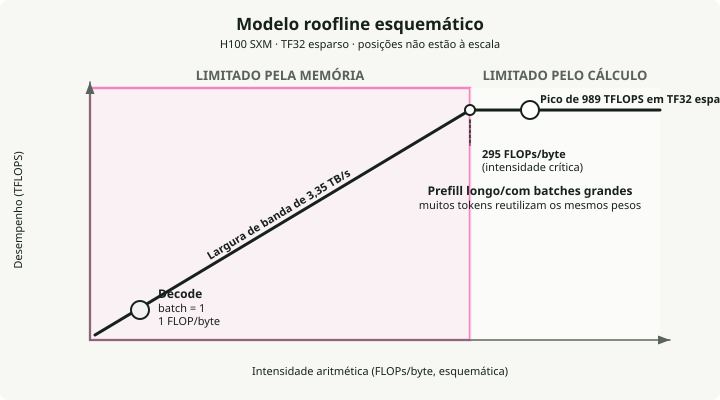
As duas fases da inferência LLM ficam em lados opostos deste limiar:
- Decode é memory-bound. Gerar tokens um a um implica carregar toda a matriz de pesos de vários GB da memória para a multiplicar por um único token novo. Em precisão de 16 bits (2 bytes por parâmetro), isso dá exatamente 1 FLOP/byte, quase 300x abaixo do limiar da H100. As unidades de computação ficam inativas mais de 99% do tempo à espera da memória.
- Prefill é compute-bound. Processar o prompt de entrada carrega os pesos uma vez, mas multiplica-os por centenas ou milhares de tokens ao mesmo tempo. A intensidade sobe muito acima de 295 e satura as unidades de computação.
Por isso, para acelerar decode, trabalhe na largura de banda de memória: reduza os pesos com quantização, reduza o overhead de memória KV com GQA e PagedAttention, e aumente a intensidade com batching. Para acelerar prefill, trabalhe na computação bruta: GPUs mais rápidas, computação FP8.
2. Hierarquia de Memória da GPU
Uma GPU tem quatro camadas de memória, organizadas como uma pirâmide: uma memória principal grande mas lenta (HBM) em baixo, e registos minúsculos mas muito rápidos no topo. Mover dados para cima e para baixo nesta pirâmide é o principal congestionamento. O bottleneck mais difícil está entre HBM e SRAM, onde a SRAM é aproximadamente 10x mais rápida.
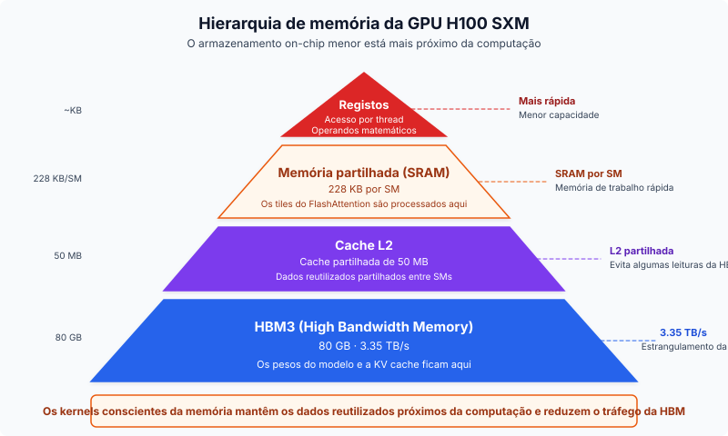
Da mais rápida para a mais lenta numa H100:
- Registers — a memória mais rápida, ligada diretamente às threads de processamento. É aqui que a matemática corre efetivamente; os dados têm de ser carregados aqui para os Tensor Cores os usarem.
- SRAM (Shared Memory) — a memória de trabalho a cerca de 33 TB/s.
- L2 Cache — uma camada intermédia (50 MB) a cerca de 12 TB/s. Atua como buffer para que, quando vários SMs precisam dos mesmos pesos, não tenham todos de ir buscá-los à HBM.
- HBM3 — os 80 GB de memória principal que guardam os pesos do modelo e o KV cache, a ~3.35 TB/s.
A maior parte dos truques de software deste guia (FlashAttention, kernel fusion, PagedAttention) existe para manter os dados na SRAM durante o máximo tempo possível e evitar a viagem de regresso à HBM, que é 10x mais lenta.
3. Glossário de Hardware GPU
Os termos abaixo aparecem ao longo do resto do guia.
HBM (High Bandwidth Memory) — Dies DRAM empilhados ligados via through-silicon vias (TSVs), montados no package ao lado do die da GPU. Gerações: HBM2e (A100, 2 TB/s), HBM3 (H100, 3.35 TB/s), HBM3e (H200/B200, 4.8–8 TB/s). Porque importa para LLMs: decode é limitado pela largura de banda da memória, por isso a largura de banda da HBM determina diretamente o TPOT.
GDDR (Graphics DDR) — Memória gráfica tradicional (GDDR6, GDDR6X) usada em GPUs de consumo (RTX 4090, L40S). Tem menor largura de banda do que HBM, mas é mais barata por GB. A GDDR6X na RTX 4090 entrega ~1 TB/s, face aos 3.35 TB/s de HBM3 da H100.
SM (Streaming Multiprocessor) — O bloco básico de computação das GPUs NVIDIA. Cada SM contém CUDA cores, Tensor Cores, memória partilhada (SRAM) e um warp scheduler. A H100 tem 132 SMs; a A100 tem 108.
Tensor Cores — Unidades especializadas de matrix-multiply-accumulate dentro de cada SM. Aceleram matmuls de precisão mista (FP16, BF16, FP8, INT8) que dominam a computação em transformers. Os Tensor Cores da H100 entregam 989 TFLOPS em TF32, face a ~67 TFLOPS apenas dos CUDA cores.
CUDA Cores — Unidades de floating-point e inteiros de uso geral. Tratam operações element-wise, funções de ativação e trabalho não-matmul. Os Tensor Cores fazem o trabalho pesado nos LLMs; os CUDA cores tratam do resto.
Warp — Um grupo de 32 threads que executam em lockstep num SM. A menor unidade de escalonamento nas GPUs NVIDIA. A warp specialization atribui warps diferentes a tarefas diferentes (carregamento de dados vs computação) para pipelining.
NVLink — Interligação GPU-a-GPU de alta velocidade dentro de um nó. NVLink 4.0 (H100) entrega 900 GB/s bidirecionais; NVLink 5.0 (B200) chega a 1.8 TB/s. Essencial para tensor parallelism, onde as GPUs têm de trocar ativações a cada layer.
InfiniBand — Tecido de rede de alta velocidade para comunicação GPU inter-nós. A NVIDIA ConnectX-7 entrega 400 Gb/s por porta. Usado para pipeline parallelism e treino distribuído entre nós.
RDMA (Remote Direct Memory Access) — Permite que uma GPU leia/escreva diretamente na memória de outra máquina sem envolver o CPU, minimizando a latência. O GPUDirect RDMA permite transferências diretas GPU-a-GPU entre nós. Usado em serving desagregado para transferências de KV cache.
NVMe (Non-Volatile Memory Express) — Interface SSD de alta velocidade usada para offloading de KV cache e offloading de parâmetros com ZeRO-Infinity quando a memória GPU/CPU não chega. Velocidades de leitura sequencial de 5–7 GB/s por drive (PCIe Gen 4), com drives Gen 5 mais recentes a atingirem 10–14 GB/s.
TFLOPS / PFLOPS — Tera/Peta floating-point operations por segundo. 1 TFLOPS = 10¹² FLOPS. A unidade padrão para medir throughput de computação GPU. A H100 entrega 989 TFLOPS (TF32); FlashAttention-3 atinge ~1.2 PFLOPS em FP8.
Parte II — Fundamentos de Inferência
A inferência é a parte do sistema que os utilizadores realmente sentem. Latência, KV cache, o modelo de execução em duas fases, attention e quantização determinam em conjunto quão rápido, barato e fiável é o serving.
4. Latência: TTFT, TPOT e Percentis
Time to First Token (TTFT) é o atraso entre a submissão do pedido e o primeiro token de saída. É definido pela fase de prefill: o modelo tem de processar o prompt inteiro antes de gerar qualquer coisa, por isso prompts mais longos significam TTFT mais alto. Os objetivos de produção variam entre <100 ms para code completion e <500 ms para chatbots. O MLPerf Inference v5.0 define P99 TTFT em \(\\leq\) 450 ms para Llama 2 70B.
Time Per Output Token (TPOT) é o intervalo médio entre tokens consecutivos após o primeiro. Corresponde à fase de decode, em que cada passo é memory-bandwidth-bound:
A velocidade média de leitura silenciosa humana é aproximadamente 250 ms por palavra (~5 tokens/s) (Brysbaert, 2019), mas os sistemas visam taxas muito mais rápidas para que os utilizadores nunca tenham de esperar que o texto apareça. O limiar para streaming com sensação fluida é aproximadamente 25 ms por token (~40 tokens/s). O MLPerf define P99 TPOT em \(\\leq\) 40 ms para cargas interativas.
Latência P50 vs P99 importa porque a mediana esconde a pior experiência. P99 corresponde ao 1% mais lento dos pedidos, onde vivem as queixas dos utilizadores e as violações de SLA. Um sistema com bom P50 e mau P99 tem um problema de batching, preemption ou profundidade de fila.
5. Throughput: Tokens Por Segundo e o Tradeoff com Latência
O throughput mede-se em tokens de saída por segundo ao longo de todos os pedidos concorrentes. Pedidos por segundo é uma métrica mais fraca porque uma resposta de 10 tokens e uma de 1.000 tokens têm custos muito diferentes. Números típicos: Llama 3.1 8B numa única H100 atinge 5.000–11.000 tokens de saída/s com batches grandes (vLLM Benchmarks, 2024); Llama 3 70B FP8 em 4×H100 fica na mesma ordem de grandeza em vLLM, SGLang e TensorRT-LLM.
O tradeoff: com baixa concorrência, cada pedido tem ótima latência mas a GPU fica subutilizada. Aumentar o batch size aumenta o throughput quase linearmente até a computação saturar, após o que a latência sobe abruptamente. Goodput, a fração de pedidos que cumprem os seus objetivos de SLO, é a métrica que liga o throughput bruto à satisfação real do utilizador.
6. KV Cache: O Bottleneck por Trás da Maioria dos Outros Bottlenecks
Durante a geração autoregressiva, cada token novo faz attention a todos os tokens anteriores. O KV cache armazena as projeções Key e Value de cada token em cada layer para evitar a recomputação \(O(n^2)\). Sem ele, gerar o token \(n\) exigiria voltar a correr o modelo sobre todos os \(n-1\) tokens anteriores.
O KV cache é normalmente a principal pressão de memória porque cresce linearmente com o comprimento da sequência, o batch size e o número de layers:
onde:
- \(L\) = número de layers
- \(h_{kv}\) = número de KV heads
- \(d_h\) = dimensão da head
- \(s\) = comprimento da sequência
- \(B\) = batch size
Exemplos concretos com FP16 e batch size 1: Llama 3 8B com 8.192 tokens usa ~1.0 GB de KV cache; com 128K tokens, 16 GB. Llama 3 70B com 128K tokens precisa de ~40 GB para uma única sequência, metade da VRAM de uma H100. Com batch sizes de produção, o KV cache ultrapassa facilmente a memória dos pesos do modelo. Implementações ingênuas desperdiçam 60–80% da memória KV alocada devido a fragmentação, que é precisamente o problema que o PagedAttention foi construído para resolver.
As principais otimizações são GQA (menos KV heads), quantização do KV cache (FP8/INT8), PagedAttention (alocação baseada em blocos com <4% de desperdício) e offloading do KV cache para CPU ou NVMe.
7. Prefill vs Decode: Duas Fases, Dois Bottlenecks
A fase de prefill processa todo o prompt de entrada em paralelo e preenche o KV cache. É compute-bound: grandes multiplicações matriciais saturam totalmente os Tensor Cores, e é isto que determina o TTFT. A fase de decode gera um token de cada vez, com cada passo a ler os pesos completos do modelo e o KV cache da HBM para produzir um único token. É memory-bandwidth-bound: as unidades de computação ficam maioritariamente inativas à espera dos dados, e é isto que determina o TPOT.
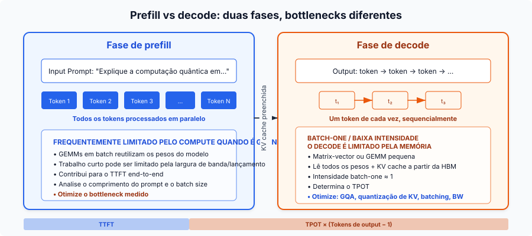
Chunked prefill divide o prompt em chunks de tamanho fixo (por exemplo, 512 tokens) em vez de o processar todo de uma vez. Um prefill longo deixa de bloquear pedidos de decode em curso, trabalho compute-bound e memory-bound passam a ser co-escalonados na mesma GPU, e benchmarks do vLLM mostram +50% de throughput (Agrawal et al., 2024). O custo é um TTFT ligeiramente superior para o novo pedido.
Um padrão mais recente chamado serving desagregado (introduzido por Splitwise e DistServe, agora usado pela Perplexity e pelo NVIDIA Dynamo) separa fisicamente prefill e decode em pools de GPUs diferentes, cada um otimizado para o seu bottleneck. As transferências de KV cache entre pools fazem-se via RDMA.
8. GQA e MQA: Reduzir o KV Cache
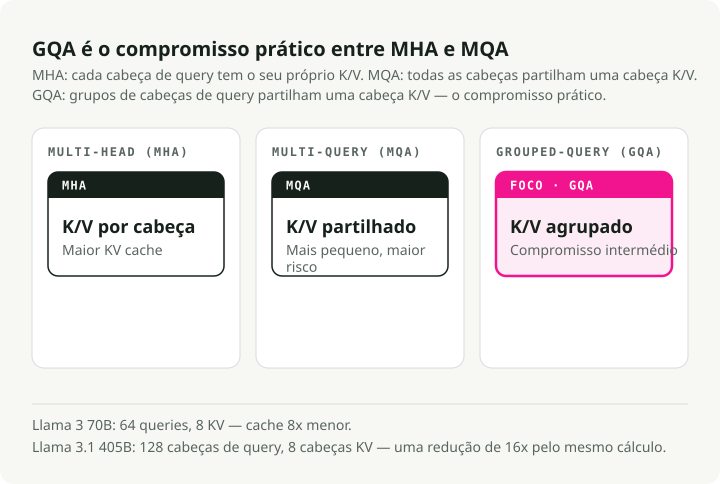
A Multi-Head Attention (MHA) standard dá a cada query head a sua própria K head e V head. A Multi-Query Attention (MQA) partilha uma única KV head por todas as query heads, o que é uma redução extrema. A Grouped-Query Attention (GQA) é o meio-termo prático: grupos de query heads partilham uma KV head.
A Llama 3 70B usa 64 query heads mas apenas 8 KV heads, uma redução de 8x no KV cache face a MHA. A Llama 3.1 405B leva isto a 128 query heads com 8 KV heads, para uma redução de 16x (Meta, 2024). GQA mantém qualidade ao nível de MHA (dentro de ~1% nos benchmarks) enquanto se aproxima da velocidade de MQA (Ainslie et al., 2023). Um KV cache menor significa batches maiores, throughput mais alto e menor latência por token em decode.
9. Quantização: Trocar Bits por Velocidade e Memória
A quantização reduz a precisão dos pesos do modelo e/ou das ativações. Os tradeoffs principais:
| Formato | Bits | Memória (modelo 7B) | Impacto na qualidade |
|---|---|---|---|
| FP16/BF16 | 16 | ~14 GB | Baseline |
| FP8 | 8 | ~7 GB | Essencialmente sem perdas em Hopper (H100) |
| INT8 | 8 | ~7 GB | Degradação de 1-3% com tuning |
| INT4 | 4 | ~3.5 GB | Estável para 70B+, arriscado em modelos pequenos |
A AWQ (Activation-Aware Weight Quantization) encontra o <1% de pesos salientes olhando para as magnitudes das ativações e aplica scaling por canal para os proteger. Precisa apenas de 128–1.024 tokens de calibração e ganhou o prémio de Best Paper da MLSys 2024. A GPTQ usa informação Hessiana de segunda ordem para quantização layer-wise, o que é melhor em benchmarks de código mas requer mais dados de calibração. O bitsandbytes (biblioteca de Tim Dettmers) quantiza on the fly durante o carregamento do modelo, sem custo de pré-processamento; o seu formato NF4 alimenta o fine-tuning com QLoRA. FP8 em H100/H200 está a tornar-se o default de produção: quase sem perdas com redução de 2x na memória.
Um ponto que vale a pena sublinhar: o kernel importa muitas vezes mais do que o algoritmo de quantização. Os mesmos pesos quantizados servidos através de kernels diferentes podem mostrar uma diferença de 2.6x em throughput apenas pela forma como usam a GPU (Secção 10).
Parte III — Otimizações de Inferência
Esta parte trata das técnicas de software que transformam um sistema de inferência funcional num sistema rápido. Cada uma ataca um bottleneck específico: FlashAttention explora a diferença SRAM-HBM, PagedAttention remove a fragmentação do KV cache, continuous batching mantém a GPU ocupada.
10. CUDA Kernels e Kernel Fusion
Um CUDA kernel é uma função escrita para a GPU que corre em paralelo ao longo de milhares de threads. Quando o CPU chama um kernel, a GPU distribui o trabalho pelos seus SMs: cada SM executa múltiplos warps de 32 threads, e cada thread processa uma fatia dos dados. Cada operação na inferência LLM, da multiplicação matricial ao token sampling, é em última análise um lançamento de kernel. Uma única forward pass num modelo 70B desencadeia centenas a milhares de lançamentos de kernel, e a diferença entre um kernel ingênuo e um otimizado pode decidir se o sistema cumpre o seu SLO de latência.
As principais categorias de kernels em serving LLM:
- GEMM kernels para multiplicação matricial, que dominam tanto prefill como decode.
- Attention kernels como FlashAttention que fazem tiling dos cálculos para ficarem na SRAM em vez de fazer spill para HBM.
- Fused kernels que combinam várias operações (como add + layer norm ou projeção QKV) num único lançamento para saltar as idas e voltas intermédias à HBM.
- Sampling kernels que convertem logits em token IDs via top-k, top-p ou temperature sampling.
A qualidade do kernel importa muitas vezes mais do que o algoritmo de quantização. Os mesmos pesos INT4 quantizados servidos através de Marlin (um kernel FP16xINT4 otimizado) atingem 712 tokens/s versus 276 tokens/s do GPTQ vanilla, uma diferença de 2.6x em throughput puramente devida a melhor utilização da GPU. O Marlin consegue-o através de memory fetching assíncrono e filas em shared memory que mantêm os Tensor Cores alimentados em vez de à espera da HBM. O Triton reduz a barreira para escrever kernels customizados ao expor programação GPU em Python em vez de CUDA C++ puro, o que torna a otimização ao nível do kernel acessível a engenheiros de ML e não apenas a especialistas em GPU. A maioria das otimizações mais à frente nesta parte (FlashAttention, fused kernels, PagedAttention) são, no fundo, melhores kernels ou formas mais inteligentes de orquestrar lançamentos de kernel.
A kernel fusion combina várias operações sequenciais num único kernel GPU e evita as escritas intermédias na HBM. Fusões comuns: projeção QKV (um matmul em vez de três), attention + softmax (o próprio FlashAttention), add + RMSNorm (FlashNorm) e ativação SwiGLU (DeepFusionKernel). O Triton torna prático escrever estes fused kernels em Python. Sem fusion, um modelo 70B tem milhares de lançamentos de kernel por token com ~30% de utilização GPU. Com fusion, as layers reduzem-se a 1–2 kernels otimizados com 80–90% de utilização.
11. FlashAttention: Tiling de Attention para Viver em SRAM
A attention standard materializa a matriz de attention completa \(N \times N\) em HBM, o que custa memória \(O(N^2)\) e gera muito tráfego de memória. A ideia por trás do FlashAttention é nunca materializar esta matriz. Faz tiling das matrizes Q, K, V em blocos que cabem em SRAM, calcula attention parcial dentro de cada tile e junta os resultados usando um online softmax (acompanhando incrementalmente o máximo e a soma correntes entre blocos). A memória desce de \(O(N^2)\) para \(O(N)\), e as leituras da HBM descem uma ordem de grandeza.
Cada versão ataca o bottleneck da sua geração de GPU:
- FlashAttention v1 (A100, 2022) provou que a ideia de tiling mais online-softmax funciona. 2–4x de speedup face a attention standard, mas apenas 25–40% de utilização GPU porque o agendamento do kernel deixava muitos SMs inativos.
- FlashAttention v2 (A100, 2023) reformulou o paralelismo para dividir pela dimensão da sequência em vez de batch e heads. Atingiu 50–73% de utilização na A100, aproximadamente 2x mais rápido do que v1.
- FlashAttention v3 (H100 Hopper, 2024) adicionou warp specialization (warps separados para movimento de dados vs matemática) e pipelining GEMM-softmax para sobrepor memory loads com computação. 75–85% de utilização na H100 e até ~1.2 PFLOPS em FP8. Spotlight na NeurIPS 2024.
- FlashAttention v4 (B200 Blackwell, 2026) aborda um novo bottleneck: em Blackwell, o throughput dos tensor cores escala tão depressa que as operações não-matmul (exponenciais do softmax, rescaling) passam a ser o limitador. O FA4 emula em software a exponencial com aproximações polinomiais em unidades FMA, usa rescaling condicional para reduzir overhead e guarda intermédios na memória tensor dedicada de Blackwell (TMEM) em vez de registos. Resultado: 1.605 TFLOPS/s na B200 em BF16, 1.3x mais rápido do que cuDNN 9.13 e 2.7x mais rápido do que Triton.
Cada geração bateu numa parede de hardware diferente, e cada versão do FlashAttention foi redesenhada desde o kernel para a resolver.
12. FlashDecoding: Paralelizar o Bottleneck de Decode
O FlashAttention standard mantém a GPU ocupada ao dividir o trabalho por batch size e query length. Durante decode o modelo gera exatamente 1 token de cada vez (query length = 1). Se o produto entre batch size e número de attention heads for inferior ao número total de SMs da GPU (108 numa A100), a maior parte da GPU fica inativa enquanto algumas unidades percorrem sequencialmente o histórico de tokens.
O FlashDecoding resolve isto adicionando uma nova dimensão de paralelização: o próprio comprimento da sequência KV. Divide o KV cache em chunks menores e distribui-os por todos os processadores GPU que de outra forma estariam inativos para avaliação em paralelo, depois junta os cálculos parciais com uma redução log-sum-exp.
O resultado é até 8x de speedup end-to-end em decode em sequências longas (contexto 64K) e tempo de decode por token aproximadamente constante. Gerar o token 60.000 continua quase tão rápido como gerar o token 100.
13. Continuous Batching vs Static Batching
Static batching espera que todas as sequências num batch terminem antes de começar o seguinte, por isso sequências curtas desperdiçam ciclos GPU em idle depois de chegarem ao end-of-sequence. Continuous batching (introduzido pelo artigo Orca, OSDI 2022) opera à granularidade de iteração: em cada passo de decode, as sequências concluídas são removidas e novas são inseridas.
Os números são grandes. Os benchmarks da Anyscale em OPT-13B mostram static batching otimizado a 4x face ao ingênuo, continuous batching a 8x, e vLLM com continuous batching + PagedAttention a 23x face ao ingênuo (Anyscale, 2023). O senão é que continuous batching amplifica a fragmentação do KV cache. Mais sequências concorrentes significam mais alocações de memória dispersas, que é precisamente o problema que o PagedAttention foi construído para resolver.
14. PagedAttention: Memória Virtual para KV Cache
O PagedAttention do vLLM aplica a ideia de memória virtual dos sistemas operativos à gestão do KV cache. O KV cache é dividido em blocos de tamanho fixo (tipicamente 16 tokens), os blocos são alocados on demand à medida que os tokens são gerados, e as posições lógicas (sequenciais) são mapeadas para localizações físicas (dispersas) de memória através de tabelas de blocos. Vários pedidos que partilham um prefixo (system prompts, beam search) podem apontar para os mesmos blocos físicos.
Os sistemas anteriores desperdiçavam 60–80% da memória do KV cache por fragmentação e pré-alocação. O PagedAttention reduz isso para <4%, o que permite aumentar o throughput em 2–4x com a mesma latência e até 24x face ao HuggingFace Transformers (vLLM Blog, 2023).
15. Speculative Decoding: Vários Tokens por Forward Pass
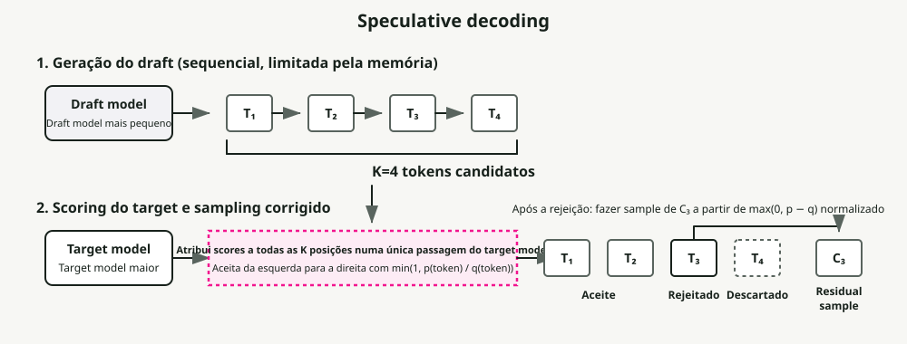
Um pequeno draft model gera \(K\) tokens candidatos, e depois o grande target model verifica todos os \(K\) tokens numa única forward pass. Os tokens corretos são aceites; o primeiro incorreto é rejeitado. A qualidade do output é matematicamente idêntica à do target model sozinho, por isso isto é um speedup sem perdas.
Funciona porque o decode de LLM é memory-bandwidth-bound: verificar \(K\) tokens custa aproximadamente o mesmo que gerar 1, já que ambos carregam todos os pesos do modelo uma vez. Os speedups típicos ficam entre 1.5x e 3x, com métodos como EAGLE-3 a chegarem até 6.5x. As variantes incluem Medusa (heads extra de previsão, sem modelo separado), prompt lookup decoding (matching de n-grams com a entrada, gratuito) e EAGLE (extrapolação ao nível de features).
O senão é a concorrência: com batch sizes altos, a computação extra de draft e verificação pode causar uma desaceleração de 1.4–1.8x. Speculative decoding ajuda mais com batch sizes baixos e em tarefas onde a aceitação do draft é alta (sumarização, QA).
16. Prefix Caching e Reutilização de KV Cache
Em vez de descartar o KV cache quando um pedido termina, o prefix caching mantém-no para reutilização em novos pedidos que partilham os mesmos tokens de prefixo. Isto corta prefill redundante para system prompts, exemplos few-shot, contexto RAG e histórico de conversas multi-turn.
O Automatic Prefix Caching do vLLM faz hash de cada bloco KV e usa uma tabela hash global para lookup, com taxas de cache hit de 87%+ em prompts bem estruturados. O RadixAttention do SGLang mantém uma árvore radix de todos os tensores KV em cache com granularidade ao nível do token e deteção automática de oportunidades de caching, atingindo até 5x de melhoria em throughput.
17. Streaming na Prática
O Streaming envia tokens para o cliente à medida que são gerados, em vez de esperar pela resposta completa. A maioria dos serving frameworks expõe isto via Server-Sent Events: o cliente abre uma ligação HTTP longa, e o servidor envia cada token (ou um pequeno batch de tokens) como um evento data:. O TTFT determina quando o utilizador vê o output pela primeira vez; o TPOT determina quão fluido parece. Objetivo: TPOT < 25 ms para streaming fluido (~40 tokens/s).
No lado do cliente, o streaming obriga a decisões de buffering. Renderizar token a token pode causar jitter visual, sobretudo com markdown ou blocos de código que precisam de contexto multi-token para serem formatados corretamente. Padrões comuns são buffering ao nível da palavra (acumular tokens até um limite de espaço em branco), buffering ao nível da linha (esperar por uma newline antes de renderizar) e buffering adaptativo (renderizar imediatamente para prosa, fazer buffer para blocos de código). O parâmetro stream_options: {"include_usage": true} nas APIs compatíveis com OpenAI devolve contagens de tokens no evento SSE final, o que permite tracking preciso de custos para respostas em streaming.
O chunked prefill é o que faz com que o streaming aguente sob carga. Sem ele, um único prefill longo pode bloquear a entrega de tokens para todos os outros utilizadores concorrentes.
Parte IV — Arquitetura de Modelos
Como os LLMs são construídos: o bloco transformer, tokenização, gestão de contexto e as variantes arquiteturais que se tornaram default. Estes pontos sustentam tanto a inferência como o treino.
18. Essenciais da Arquitetura Transformer
Um transformer moderno decoder-only (GPT, Llama) é uma stack de layers idênticas, cada uma com dois sub-blocos: attention e feed-forward. Cada sub-bloco é envolvido com uma residual connection e normalização. Os componentes-chave:
Multi-Head Attention — o mecanismo que permite a cada token olhar para todos os outros tokens para decidir o que é relevante. A entrada é projetada em três matrizes: Queries (o que procuro?), Keys (o que contenho?) e Values (que informação transporto?). Os attention scores são depois calculados como:
O produto escalar \(QK^T\) mede a similaridade entre cada par de tokens. Dividir por \(\\sqrt{d_k}\) evita que os produtos escalares cresçam demasiado (o que empurraria o softmax para regiões com vanishing gradients). O softmax converte scores em probabilidades, e a multiplicação por \(V\) produz uma combinação ponderada de vetores de valor. Executar isto em múltiplas heads em paralelo permite ao modelo atender a relações diferentes ao mesmo tempo (uma head para sintaxe, outra para coreferência, etc.).
Feed-Forward Network (FFN) — depois de a attention decidir quais os tokens relevantes, a FFN decide o que fazer com essa informação. Os LLMs modernos usam SwiGLU em vez da FFN ReLU original de duas matrizes:
A SwiGLU usa três matrizes de pesos em vez de duas e uma ativação Swish suave em vez de ReLU. Isso acrescenta cerca de 50% mais parâmetros à FFN, mas melhora a qualidade o suficiente para que todas as principais famílias de modelos (Llama, Mistral, Qwen, Gemma) a tenham adotado. A FFN representa tipicamente cerca de dois terços dos parâmetros totais do modelo.
Residual Connections — cada sub-bloco adiciona a sua saída de volta à sua entrada: \(\\text{Output} = \\text{Input} + \\text{Sublayer}(\\text{Input})\). Sem esta skip connection, os gradientes desaparecem ao fazer backpropagation através de 80–128 layers. O residual cria um caminho que permite a informação e os gradientes fluírem diretamente das layers iniciais para as finais.
RMSNorm — substituiu a LayerNorm em praticamente todos os LLMs modernos. A LayerNorm normaliza recentrando (subtraindo a média) e reescalando (dividindo pelo desvio padrão). A RMSNorm salta a subtração da média e apenas reescala, o que reduz para metade os parâmetros aprendidos e é 7–64% mais rápida sem perda de qualidade. A colocação pre-norm (normalizar antes de attention/FFN e não depois) é agora standard porque dá gradientes mais estáveis sem warmup cuidadoso da learning rate.
Estimativa da contagem de parâmetros para um modelo decoder-only:
onde \(V\) = tamanho do vocabulário, \(d\) = dimensão escondida, \(L\) = número de layers. O termo \(V \times d\) é a matriz de embeddings; os \(12 \times d^2\) por layer cobrem as projeções de attention (Q, K, V, output = \(4d^2\)) e a FFN SwiGLU (\(8d^2\) com o tamanho intermédio típico de \(\\frac{8}{3}d\)). Para Llama 3 8B (\(V\)=128,256, \(d\)=4,096, \(L\)=32): \(128{,}256 \times 4{,}096 + 12 \times 32 \times 4{,}096^2 \approx 7.0B + 0.5B \approx 7.5B\) parâmetros (real: 8.03B com tied embeddings e ajustes GQA).
19. Porque as Arquiteturas Decoder-Only Dominam
O Transformer original (2017) tinha tanto encoder como decoder. Desde então, o campo dividiu-se em três famílias arquiteturais, e uma tornou-se o default para IA generativa.
Os modelos encoder-only (BERT, RoBERTa) usam attention bidirecional: cada token atende a todos os outros tokens em ambas as direções. Isso produz representações ricas para tarefas de compreensão (classificação, NER, similaridade semântica) mas não consegue gerar texto autoregressivamente. Os modelos encoder-only continuam a dominar como backbone de embedding models, rerankers e classificadores leves (por exemplo, os routers baseados em BERT no RouteLLM).
Os modelos encoder-decoder (T5, BART, o Transformer original) separam compreensão de geração. O encoder processa a entrada completa com attention bidirecional, depois o decoder gera o output autoregressivamente enquanto atende às representações do encoder via cross-attention. Isto tinha uma vantagem natural para tarefas sequence-to-sequence como tradução, onde entrada e saída são sequências fundamentalmente diferentes. O T5 da Google mostrou que qualquer tarefa de NLP podia ser enquadrada como text-to-text, e os modelos encoder-decoder continuam a alimentar alguns sistemas especializados (Whisper para reconhecimento de fala, FLAN-T5 para instruction following).
Os modelos decoder-only (GPT, Llama, Mistral, Gemini) usam attention causal (unidirecional): cada token atende apenas aos tokens anteriores. Enquadram tudo como previsão do próximo token: a "entrada" é o início da sequência, e o "output" é a sua continuação. Quatro razões explicam porque esta arquitetura ganhou:
-
Eficiência do KV cache. O KV cache dos tokens anteriores mantém-se válido à medida que novos tokens são gerados, por isso nunca o descarta nem recomputa. Os modelos encoder-decoder têm de manter dois caches de attention separados (self-attention mais cross-attention sobre o output do encoder), o que acrescenta overhead de memória e complexidade arquitetural.
-
Simplicidade de treino. O objetivo de treino é previsão simples do próximo token sobre texto bruto. Não precisa de dados emparelhados input-output (como os modelos de tradução) nem de reconstrução de tokens mascarados (como o BERT). Pode treinar em praticamente qualquer texto da internet, livros e código sem pré-processamento especial, o que é uma enorme vantagem ao escalar dados para biliões de tokens.
-
Simplicidade arquitetural. Um único módulo trata de tudo: o mesmo bloco transformer, repetido \(L\) vezes. Sem layers de cross-attention encoder-decoder, sem stack de encoder separada. Isto torna as estratégias de paralelismo mais diretas (Secção 33) e reduz a superfície de engenharia para otimização. FlashAttention, quantização e speculative decoding só têm de atingir um único padrão de attention.
-
Aprendizagem in-context. Os modelos decoder-only são naturalmente bons em few-shot learning porque exemplos, instruções e a query são todos apenas tokens na mesma sequência. O modelo não distingue "input" de "output"; prevê o próximo token dado tudo o que veio antes. O GPT-3 demonstrou isto primeiro à escala, e tornou os modelos decoder-only uma forte escolha para o papel de assistente generalista.
20. Mixture of Experts
O MoE substitui a FFN densa em cada layer transformer por várias expert FFNs mais pequenas mais um gating router leve. O router calcula um score para cada expert (tipicamente um softmax sobre projeções lineares aprendidas) e seleciona os top-\(k\) experts por token. Só os experts ativados computam, por isso um modelo pode ter capacidade total enorme mantendo baixo o custo por token. Isto é computação condicional esparsa: os parâmetros totais definem o que o modelo pode representar, os parâmetros ativos definem quanto custa executá-lo.
| Modelo | Params Totais | Params Ativos | Experts (Routed + Shared) | Top-\(k\) |
|---|---|---|---|---|
| Mixtral 8x7B | 47B | ~13B | 8 + 0 | 2 |
| DeepSeek-V3 | 671B | 37B | 256 + 1 | 8 |
O shared expert em DeepSeek-V3 é sempre ativado para todos os tokens. Fornece uma representação base sobre a qual os routed experts se podem especializar.
Treinar MoE tem os seus próprios pontos dolorosos. Load balancing: os tokens concentram-se em alguns experts populares e os restantes ficam subtreinados. Expert collapse: os experts convergem para representações idênticas, o que anula o propósito de ter vários experts. E há o overhead de comunicação do Expert Parallelism. Os modelos MoE tradicionais adicionam uma loss auxiliar para penalizar routing desequilibrado, mas essa loss compete com o objetivo principal de treino e degrada a qualidade. O DeepSeek-V3 tratou isto com termos de bias sem loss auxiliar: cada expert tem um bias somado ao seu gating score, ajustado dinamicamente fora do backpropagation, reduzido para experts sobrecarregados e aumentado para experts subcarregados. O resultado é routing equilibrado sem tradeoff de qualidade.
21. Tokenização: BPE, SentencePiece e tiktoken
Os LLMs não veem texto. Veem sequências de IDs inteiros de tokens. Um tokenizer divide texto bruto em tokens (subword pieces) e mapeia cada um para um ID. A escolha do tokenizer afeta a qualidade do modelo, a velocidade de inferência e a equidade multilingue.
O Byte Pair Encoding (BPE) é o algoritmo mais comum. Junta iterativamente os pares adjacentes mais frequentes no corpus de treino. Um exemplo simplificado:
- Começar com vocabulário ao nível do carácter:
[l, o, w, e, r, _] - O par mais frequente é
(l, o)→ juntar emlo→ vocabulário:[l, o, w, e, r, _, lo] - O par mais frequente seguinte é
(lo, w)→ juntar emlow→ o vocabulário passa a incluirlow - Continuar até o vocabulário atingir o tamanho-alvo (por exemplo, 128K tokens)
Palavras comuns como "the" tornam-se tokens únicos, enquanto palavras raras como "defenestration" são divididas em subword pieces como ["def", "en", "est", "ration"]. O tradeoff é entre tamanho do vocabulário e comprimento da sequência.
Três implementações de tokenizer cobrem a maior parte do uso em produção:
- SentencePiece trata a entrada como um fluxo bruto de bytes sem pré-processamento específico da língua (sem pre-tokenization por espaços ou pontuação), o que o torna language-agnostic e importa muito para scripts não latinos. Suporta BPE e unigram. Usado por Llama 1/2, T5 e Mistral.
- tiktoken é o tokenizer em Rust da OpenAI que usa byte-level BPE. O seu core compilado em Rust é 3–6x mais rápido do que alternativas baseadas em Python. A Llama 3 mudou de SentencePiece para o algoritmo do tiktoken.
- HuggingFace Tokenizers é a biblioteca baseada em Rust que suporta BPE, WordPiece e Unigram. É o standard de facto para distribuição de modelos open-source.
Os tamanhos de vocabulário cresceram de forma consistente, com implicações importantes para a eficiência:
| Modelo | Tamanho do Vocab | Fertility em Inglês | Porque Importa |
|---|---|---|---|
| GPT-2 | 50,257 | ~1.3 tokens/palavra | Baseline BPE original |
| Llama 2 | 32,000 | ~1.4 tokens/palavra | Vocabulário menor, sequências mais longas |
| GPT-4 | 100,256 | ~1.1 tokens/palavra | Melhor compressão, menos tokens por pedido |
| Llama 3 | 128,256 | ~1.0 tokens/palavra | 4x maior do que Llama 2, grande ganho multilingue |
| GPT-4o | 200,000 | ~1.0 tokens/palavra | Maior vocabulário de produção |
Fertility (tokens por palavra) mede a eficiência da compressão. Menor é melhor: menos tokens significam sequências mais curtas, custo mais baixo e mais conteúdo na janela de contexto. O inglês fica tipicamente em ~1.0–1.3 tokens/palavra, mas scripts não latinos (chinês, japonês, coreano, árabe) podem ficar 2–4x acima com vocabulários centrados em inglês. O mesmo conteúdo custa 2–4x mais tokens para utilizadores não ingleses, o que é um problema persistente de equidade que vocabulários maiores e mais equilibrados só resolvem em parte.
22. Janelas de Contexto e Positional Encodings
A janela de contexto é o número máximo de tokens que um modelo consegue processar numa única forward pass. Cresceu bastante:
| Modelo | Janela de Contexto | Ano |
|---|---|---|
| Transformer original | 512 | 2017 |
| GPT-4 Turbo | 128K | 2023 |
| Claude 3.5 | 200K | 2024 |
| Gemini 1.5 Pro | 1M+ | 2024 |
| Grok 4 Fast | 2M | 2025 |
Há aqui um problema básico: o mecanismo de attention trata a sua entrada como um conjunto, não como uma sequência. Não tem noção intrínseca da ordem das palavras. Sem informação posicional, "the cat sat on the mat" e "the mat sat on the cat" produziriam representações idênticas. Os positional encodings injetam ordem para que o modelo saiba onde cada token está.
Três abordagens dominam:
-
RoPE (Rotary Position Embeddings) codifica a posição de cada token rodando os seus vetores query e key por um ângulo proporcional à posição. Tokens próximos recebem rotações semelhantes, por isso o seu produto escalar (attention score) mantém-se alto. Tokens distantes recebem rotações muito diferentes, o que codifica a distância relativa. O RoPE é o standard para quase todos os LLMs open modernos (Llama, Mistral, Qwen) porque lida bem com posições relativas e é computacionalmente barato.
-
ALiBi (Attention with Linear Biases) evita modificar embeddings e adiciona uma penalização diretamente aos attention scores: quanto mais afastados estiverem dois tokens, maior é o bias negativo. Sem parâmetros aprendidos, sem computação extra. Permite alguma extrapolação para além do comprimento de treino, mas degrada-se visivelmente a 2x+ do contexto de treino.
-
YaRN (Yet another RoPE extensioN) é a melhor opção atual para estender a janela de contexto de um modelo para além daquilo em que foi treinado. Agrupa as dimensões de frequência do RoPE em três categorias (alta frequência: não escalar; baixa frequência: escalar linearmente; média frequência: interpolar) e aplica scaling diferente a cada uma. Resultado: extensão de contexto com 10x menos tokens de fine-tuning e 2.5x menos passos de treino do que a interpolação posicional ingênua.
Parte V — Treino e Alinhamento
É no treino que as capacidades são construídas. Esta parte cobre pretraining, fine-tuning eficiente (LoRA, mixed precision), scaling laws e métodos de alinhamento.
23. Pretraining, Fine-Tuning e Alinhamento
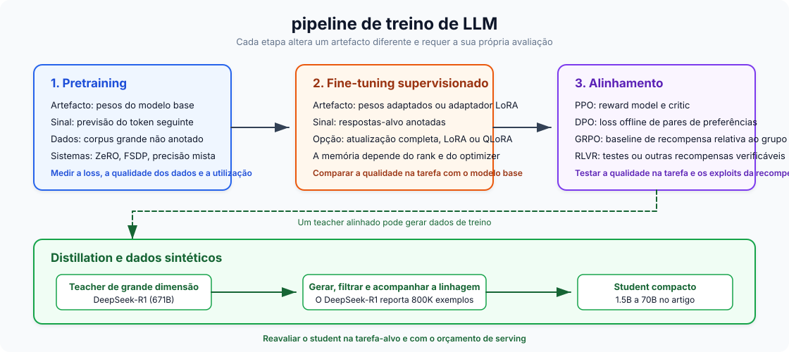
Pretraining é previsão self-supervised do próximo token em triliões de tokens. Constrói compreensão geral da linguagem e custa \\(500K a \\\)100M+: a Llama 3 405B usou \(3.8 \times 10^{25}\) FLOPs. Supervised fine-tuning (SFT) adapta o modelo pré-treinado a tarefas específicas com dados rotulados, na ordem de centenas a poucos milhares de dólares numa única GPU. RLHF / RLAIF ensina qualidades subjetivas como utilidade através de aprendizagem por preferências: recolher comparações humanas, treinar um reward model, depois fazer fine-tuning com RL (tipicamente PPO ou DPO). O RLAIF substitui anotadores humanos por feedback de IA (Constitutional AI).
A computação varia ao longo de aproximadamente seis ordens de magnitude: pretraining em \(10^{24}\)–\(10^{26}\) FLOPs, SFT em \(10^{18}\)–\(10^{21}\), RLHF semelhante a SFT mas com 4 cópias do modelo em memória para PPO. Cobri o framework completo de decisão para fine-tuning (quando fazer fine-tune vs usar RAG vs prompt engineering) em LLM Fine-Tuning Guide.
24. LoRA e QLoRA: Fine-Tuning Eficiente em Parâmetros
A LoRA congela os pesos pré-treinados e injeta matrizes treináveis de baixa rank \(A\) (\(r \times k\)) e \(B\) (\(d \times r\)), de forma que o peso atualizado é \(W_0 + BA\). A ideia é que as atualizações de pesos durante o fine-tuning têm baixa rank intrínseca. Isso reduz os parâmetros treináveis em 10.000x (o GPT-3 175B desce de 175B para ~18M) e a memória GPU em ~3x. Ranks típicos: \(r\)=8–16 para tarefas simples, \(r\)=64–128 para cenários complexos. Os adapters LoRA podem ser fundidos após o treino sem overhead de inferência.
A QLoRA carrega o modelo base em quantização NF4 de 4 bits enquanto treina adapters LoRA em BF16. O NormalFloat4 coloca mais níveis de quantização perto de zero, onde a densidade dos pesos é maior. O QLoRA faz fine-tuning de um modelo 65B numa única GPU de 48GB com desempenho praticamente indistinguível do fine-tuning completo em 16 bits. O tradeoff é 39% mais tempo de treino para 33% de poupança de memória GPU face ao LoRA standard.
25. Mixed Precision Training
Cada formato de floating-point distribui os seus bits por três campos: sign (sempre 1 bit), exponent (define o range dinâmico) e mantissa (define a precisão). Mais bits de exponent significam uma gama mais ampla de magnitudes representáveis; mais bits de mantissa significam distinções mais finas entre valores próximos. Os formatos inteiros não têm exponent e representam apenas números inteiros uniformemente espaçados dentro de uma gama fixa.
| Formato | Bits | Layout (S / E / M) | Gama | Precisão | Melhor Para |
|---|---|---|---|---|---|
| FP32 | 32 | 1 / 8 / 23 | \(\\pm 3.4 \\times 10^{38}\) | ~7 dígitos decimais | Pesos master, estados do otimizador (momentum e variance do Adam) |
| BF16 | 16 | 1 / 8 / 7 | \(\\pm 3.4 \\times 10^{38}\) | ~2 dígitos decimais | Formato de treino preferido — mesma gama do FP32, sem necessidade de loss scaling |
| FP16 | 16 | 1 / 5 / 10 | \(\\pm 65{,}504\) | ~3 dígitos decimais | Treino com loss scaling (GPUs mais antigas); inferência em hardware pré-Hopper |
| FP8 E4M3 | 8 | 1 / 4 / 3 | \(\\pm 448\) | ~1 dígito decimal | Forward pass em Hopper (H100) — mais precisão para pesos e ativações |
| FP8 E5M2 | 8 | 1 / 5 / 2 | \(\\pm 57{,}344\) | ~0.6 dígitos decimais | Backward pass em Hopper — maior gama para gradientes |
| INT8 | 8 | fixed-point | \(-128\) a \(127\) | Inteiros exatos | Quantização de pesos pós-treino para inferência (W8A8); quantização do KV cache |
| INT4 | 4 | fixed-point | \(-8\) a \(7\) | Inteiros exatos | Quantização agressiva weight-only (AWQ, GPTQ) para inferência em hardware com pouca memória |
O BF16 tem a mesma gama que o FP32 porque a gama é definida pelo campo exponent, e o BF16 mantém todos os 8 bits de exponent do FP32. Cede bits de mantissa em vez disso (7 vs 23), trocando precisão por uma redução de 2x na memória, evitando os problemas de overflow e underflow que afetam o treino em FP16. O FP16 tem apenas 5 bits de exponent, limitando a sua gama a ~65K. Os gradientes excedem isso regularmente, razão pela qual o treino em FP16 precisa de loss scaling: multiplicar a loss por uma constante grande antes do backprop, depois dividir os gradientes no fim. O BF16 torna o loss scaling desnecessário.
Os formatos inteiros estão ausentes do treino porque a quantização inteira não tem gama dinâmica e não consegue representar a vasta dispersão de magnitudes de gradiente durante o backpropagation. Funcionam bem para inferência, onde os pesos estão congelados e podem ser mapeados para uma gama fixa. A quantização INT4 (via AWQ ou GPTQ) reduz um modelo 7B de ~14 GB para ~3.5 GB, o suficiente para correr em GPUs de consumo com apenas pequena perda de qualidade.
O treino FP8 em H100 via Transformer Engine usa E4M3 para a forward pass (mais bits de mantissa, melhor precisão para ativações) e E5M2 para a backward pass (mais bits de exponent, gama mais ampla para gradientes), e entrega até 75% mais rapidez em wall-clock em modelos 175B. O DeepSeek-V3 treinou inteiramente com mixed precision FP8 por cerca de $5.6M, que é o custo marginal de computação da execução final de treino, sem contar com I&D e infraestrutura.
26. Gradient Checkpointing
Cada layer da forward pass produz um output intermédio chamado activation:
Normalmente, todas as ativações têm de ficar em memória porque o backpropagation precisa delas para calcular gradientes. Num transformer profundo, as ativações armazenadas podem ocupar mais memória do que os próprios pesos do modelo.
O gradient checkpointing troca computação por memória descartando a maioria dessas ativações e recomputando-as on the fly durante o backprop. A estratégia standard (Chen et al., 2016) divide uma rede de \(n\) layers em \(\\sqrt{n}\) segmentos uniformemente espaçados e guarda apenas a activation de fronteira de cada segmento. Essas fronteiras guardadas são os "checkpoints". Todas as ativações intermédias dentro de um segmento são descartadas imediatamente.
Quando a backward pass chega a uma layer dentro de um segmento, as suas ativações são recomputadas a partir do checkpoint mais próximo. Isto reduz a memória de ativações de \(O(n)\) para \(O(\\sqrt{n})\), o que corresponde a uma redução de 60–70% na prática, ao custo de aproximadamente uma forward pass extra (~20–33% mais computação). O FlashAttention aplica o mesmo princípio dentro da attention, não materializando a matriz de attention completa. Ative-o no HuggingFace com gradient_checkpointing=True.
27. DeepSpeed ZeRO Stages
No data parallelism standard, cada GPU guarda uma cópia completa dos pesos do modelo, gradientes e estados do otimizador. Para Adam, cada parâmetro ocupa 2 bytes para o peso FP16 + 4 bytes para o peso master FP32 + 4 bytes para momentum + 4 bytes para variance + 2 bytes para o gradiente, o que dá 16 bytes por parâmetro. Um modelo com 7.5B parâmetros precisa de ~120 GB por GPU, e cada GPU guarda exatamente a mesma coisa. Em 64 GPUs isso são 64 cópias idênticas de 120 GB. Muito desperdício.
O DeepSpeed ZeRO (Zero Redundancy Optimizer) remove esta duplicação particionando estes componentes pelas GPUs em vez de os replicar:
- Stage 1 — particionar estados do otimizador. Cada GPU guarda apenas 1/N dos estados do otimizador (momentum e variance do Adam, 8 bytes/param). Quando uma GPU precisa de atualizar um peso, atualiza apenas a sua fatia e faz broadcast do resultado. A memória desce de ~120 GB para ~31 GB por GPU.
- Stage 2 — particionar também gradientes. Os gradientes (2 bytes/param) deixam de ser all-reduced para todas as GPUs. Cada GPU recebe apenas a fatia de gradiente de que precisa via reduce-scatter. A memória desce para ~16 GB por GPU.
- Stage 3 — particionar também os pesos do modelo. Cada GPU guarda apenas 1/N dos pesos FP16. Antes da forward ou backward pass de cada layer, a GPU chama all-gather para reconstruir temporariamente os pesos completos da layer a partir de todas as outras GPUs, computa e descarta os pesos reunidos. A memória desce para ~1.9 GB por GPU.
| Config | Estados do Otimizador | Gradientes | Pesos | Memória por GPU (7.5B) |
|---|---|---|---|---|
| Sem ZeRO | Replicados | Replicados | Replicados | ~120 GB |
| Stage 1 | Particionados | Replicados | Replicados | ~31 GB |
| Stage 2 | Particionados | Particionados | Replicados | ~16 GB |
| Stage 3 | Particionados | Particionados | Particionados | ~1.9 GB |
O tradeoff é a comunicação. O Stage 1 acrescenta overhead mínimo, o Stage 2 substitui all-reduce por reduce-scatter (custo semelhante), mas o Stage 3 precisa de chamadas all-gather antes de cada layer tanto na forward como na backward pass, aproximadamente 1.5x o volume de comunicação face ao data parallelism standard.
O ZeRO-Infinity estende o Stage 3 fazendo offloading dos estados particionados para RAM do CPU e até SSDs NVMe, o que torna possível treinar modelos com triliões de parâmetros em clusters GPU limitados. O custo é uma grande quebra de velocidade (NVMe é ~500x mais lento do que HBM), por isso o ZeRO-Infinity é o que se usa quando o modelo genuinamente não cabe em memória GPU + CPU.
28. FSDP: Sharding Nativo em PyTorch
O Fully Sharded Data Parallel (FSDP) é a resposta integrada do PyTorch ao DeepSpeed ZeRO-3. Particiona parâmetros, gradientes e estados do otimizador entre GPUs com a mesma ideia central. A mecânica para cada layer segue um ciclo simples:
- All-gather dos parâmetros completos a partir de todas as GPUs (reconstrução temporária da layer completa).
- Compute da forward ou backward pass dessa layer.
- Free dos parâmetros reunidos imediatamente. Cada GPU mantém apenas a sua shard.
- Reduce-scatter dos gradientes para que cada GPU receba apenas a sua fatia atribuída.
Como o FSDP é nativo de PyTorch, evita o overhead de fazer ponte entre frameworks. Essa vantagem de integração torna o FSDP até 5x mais rápido por iteração do que o DeepSpeed ZeRO-3 para modelos intermédios em setups multi-nó (os resultados dependem da carga), e funciona nativamente com as ferramentas de debugging do PyTorch, profilers e torch.compile.
| Critério | FSDP (PyTorch) | DeepSpeed ZeRO |
|---|---|---|
| Melhor para | Modelos até ~70B, workflows nativos PyTorch | Modelos massivos (70B+), restrições extremas de memória |
| Offloading | Offloading para CPU | Offloading para CPU + NVMe (ZeRO-Infinity) |
| ZeRO stages | Apenas Stage 3 (full sharding) | Stages 1, 2, 3 (controlo granular) |
| Integração com framework | PyTorch nativo, suporte a torch.compile | Biblioteca separada, sistema de config próprio |
| Ecossistema | Nativo PyTorch | Conjunto de funcionalidades maior, mais knobs para afinar |
O FSDP2 (2024–2025) é uma reescrita que melhora a integração com torch.compile para melhor kernel fusion, adiciona suporte a treino FP8 via TorchAO e simplifica a API. Tanto FSDP como DeepSpeed são acessíveis através do HuggingFace Accelerate, que permite alternar entre ambos com uma única mudança de config.
29. Scaling Laws e a Armadilha Chinchilla
O scaling Chinchilla (DeepMind, 2022) mostrou que o treino compute-optimal usa ~20 tokens por parâmetro, pelo que um modelo 70B deve ser treinado com ~1.4T tokens. Seguir o Chinchilla à risca produz modelos demasiado grandes para servir a baixo custo, o que constitui a armadilha Chinchilla. Um modelo 70B ótimo segundo Chinchilla obtém ótima training loss, mas cada pedido de inferência tem de carregar e executar todos os 70B parâmetros. Se um modelo mais pequeno treinado com mais dados atingir qualidade semelhante, será dramaticamente mais barato de servir ao longo dos milhares de milhões de pedidos em produção.
A solução é sobre-treinar modelos mais pequenos com muito mais dados. A progressão é marcante:
| Modelo | Params | Tokens de Treino | Tokens/Param | Chinchilla × |
|---|---|---|---|---|
| Chinchilla | 70B | 1.4T | 20:1 | 1× |
| Llama 1 | 65B | 1.4T | 22:1 | 1× |
| Llama 2 | 70B | 2.0T | 29:1 | 1.4× |
| Llama 3 8B | 8B | 15T | 1,875:1 | 94× |
| Qwen3-0.6B | 0.6B | 36T | 60,000:1 | 3,000× |
Quando se contabiliza o custo de inferência ao longo da vida útil em milhares de milhões de pedidos, treinar modelos menores durante mais tempo ganha por larga margem. Um modelo como Llama 3 8B custa mais em computação de treino do que o Chinchilla prescreveria, mas custa uma fração a fazer deploy, e o custo de inferência domina o gasto total. "Ótimo segundo Chinchilla" significa na realidade "ótimo para computação de treino", o que é um objetivo diferente de "ótimo com consciência do custo de inferência".
30. RLHF, DPO, GRPO e o Panorama do Alinhamento
Alinhamento é o processo de orientar um modelo pré-treinado para seguir instruções, recusar pedidos nocivos e produzir respostas verdadeiras. Faz a ponte entre "consegue prever o próximo token" e "é realmente útil e seguro". Um modelo base pré-treinado gera sem problemas conteúdo tóxico, alucina com confiança ou ignora as suas instruções. Os métodos abaixo são as principais abordagens para fechar essa lacuna, cada um com os seus tradeoffs em complexidade, requisitos de dados e estabilidade de treino.
O pipeline clássico de RLHF: SFT → recolher pares de preferências humanas → treinar um reward model nesses pares → fazer fine-tuning da policy com PPO (Proximal Policy Optimization). O PPO mantém 4 cópias do modelo em memória ao mesmo tempo (policy, referência, critic/value model, reward model), é sensível a hiperparâmetros e propenso a reward hacking, em que o modelo explora peculiaridades do reward model (como respostas longas e confiantes) em vez de melhorar genuinamente a qualidade.
O DPO (Direct Preference Optimization) elimina totalmente o reward model e o ciclo de RL e otimiza diretamente uma loss contrastiva sobre pares de preferência. Isso colapsa o pipeline para um único passo de treino supervisionado, muito mais simples e estável. O tradeoff é que o DPO é offline: treina apenas sobre um dataset fixo de preferências pré-recolhidas. O modelo nunca gera novas respostas durante o treino, por isso não consegue explorar comportamentos fora da sua distribuição inicial. Isso limita a sua eficácia em tarefas como raciocínio, onde o modelo precisa de descobrir novas estratégias.
O GRPO (Group Relative Policy Optimization, DeepSeek) combina o melhor de ambos. Remove o critic/value model do PPO gerando várias completions por prompt e usando a recompensa média do grupo como baseline, pelo que mantém apenas 2 cópias de LLM versus as 4 do PPO. Ao contrário do DPO, o GRPO é on-policy: o modelo gera respostas novas durante o treino, o que lhe permite explorar. O GRPO esteve na base do avanço em raciocínio do DeepSeek-R1 via RLVR (Reinforcement Learning from Verifiable Rewards), em que o reward model aprendido é substituído por verificação baseada em regras (correção matemática, compilação de código, testes unitários). Recompensas verificáveis não podem ser exploradas via hacking, o que contorna esse problema.
| Método | Modelos em Memória | Sinal de Recompensa | Online/Offline | Limitação Principal |
|---|---|---|---|---|
| PPO | 4 (policy, ref, critic, reward) | Reward model aprendido | Online | Reward hacking, tuning complexo |
| DPO | 2 (policy, reference) | Implícito (pares de preferência) | Offline | Sem exploração, dados fixos |
| GRPO | 2 (policy, reference) | Explícito (verificável ou aprendido) | Online | Precisa de recompensas verificáveis para benefício total |
31. Distillation: Comprimir Conhecimento Entre Modelos
A knowledge distillation transfere capacidades de um teacher grande para um student mais pequeno. Há duas abordagens. Distillation baseada em logits treina o student para igualar a distribuição completa de probabilidade de saída do teacher (as "soft labels" que capturam incerteza e relações entre tokens). Distillation baseada em dados faz o teacher gerar dados sintéticos de treino sobre os quais o student é afinado. Para LLMs, a distillation baseada em dados domina: funciona entre arquiteturas e tokenizers diferentes, requer apenas acesso API ao teacher (sem pesos internos) e escala para quantidades arbitrárias de dados de treino.
O DeepSeek-R1 gerou 800.000 exemplos de raciocínio chain-of-thought e usou-os para destilar modelos Qwen2.5 e Llama 3 de 1.5B a 70B parâmetros. Os resultados mudaram a fasquia do que modelos pequenos conseguem fazer:
- DeepSeek-R1-Distill-Qwen-32B obtém 72.6% em AIME 2024 e 94.3% em MATH-500, superando o OpenAI o1-mini.
- DeepSeek-R1-Distill-Qwen-7B obtém 55.5% em AIME 2024, superando o QwQ-32B-Preview, um modelo de raciocínio 32B construído de propósito, com um modelo 4.5x menor.
A distillation revelou-se melhor do que aplicar RL diretamente a modelos menores. Quando a DeepSeek executou GRPO em modelos base menores sem distillation, os resultados foram significativamente piores. Os exemplos chain-of-thought do teacher transportam padrões de raciocínio — como decompor problemas, quando fazer backtrack, quando verificar — que o RL por si só tem dificuldade em descobrir de raiz em escalas menores.
32. Geração de Dados Sintéticos
Usar LLMs para gerar dados de treino é prática standard hoje. As técnicas principais formam uma progressão aproximada:
- Self-Instruct faz bootstrap a partir de um pequeno conjunto inicial de instruções escritas por humanos: o LLM gera novas instruções, inputs e outputs, que são filtrados e adicionados de volta ao conjunto. Isto deu origem ao dataset Alpaca (52K exemplos a partir de 175 seeds) e mostrou que um fine-tune de $600 podia aproximar a qualidade do GPT-3.5.
- Evol-Instruct (WizardLM) pega em instruções existentes e evolui-as iterativamente ao longo de eixos de complexidade (adicionando restrições, aprofundando o raciocínio, tornando os problemas mais concretos) para produzir exemplos de treino progressivamente mais difíceis.
- O Phi-4 da Microsoft (14B) foi mais longe ao tornar os dados sintéticos a maioria dos dados de pretraining, usando prompting multi-agente (vários LLMs a colaborar para gerar e criticar soluções), workflows de auto-revisão e reversão de instruções. O seu desempenho em STEM e código supera modelos várias vezes maiores.
O risco importante aqui é o model collapse: quando modelos são treinados recursivamente sobre dados sintéticos de gerações anteriores, as caudas da distribuição original desaparecem progressivamente. O modelo sobrestima padrões comuns e perde variações raras mas importantes, com uma diminuição consistente na diversidade lexical, sintática e semântica (Shumailov et al., 2024). A contaminação da web agrava isto. Em abril de 2025, 74.2% das páginas web recém-criadas numa amostra de 900K páginas continham texto gerado por IA (Ahrefs Study, 2025), por isso obter dados de pretraining limpos e gerados por humanos é cada vez mais difícil. Mitigação: misturar dados sintéticos com dados reais (nunca treinar apenas com sintéticos), filtrar agressivamente e rastrear a origem dos dados para impedir contaminação recursiva.
Parte VI — Escalabilidade e Deployment
Escalar de uma GPU para um cluster significa dividir o trabalho entre dispositivos. Esta parte cobre estratégias de paralelismo, serving frameworks, seleção de GPU e routing.
33. Quatro Tipos de Paralelismo
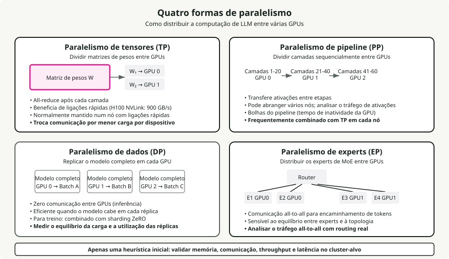
Tensor Parallelism (TP) divide matrizes de pesos individuais entre GPUs e precisa de um all-reduce após cada layer. Requer largura de banda NVLink (900 GB/s na H100) e funciona melhor dentro de um único nó. TP=2 ou TP=4 é típico; ir mais alto bate em rendimentos decrescentes por overhead de comunicação. Para inferência, o TP reduz a latência por pedido ao dividir a computação.
Pipeline Parallelism (PP) divide as layers sequencialmente entre GPUs, passando ativações entre estágios. Os requisitos de largura de banda mais baixos tornam-no viável entre nós via InfiniBand, mas introduz pipeline bubbles (tempo idle da GPU). Um padrão comum: a Llama-405B usa TP=8 dentro de nós e PP=2 entre nós.
Data Parallelism (DP) replica o modelo completo em cada GPU. Para inferência, esta é a estratégia de escalabilidade mais custo-eficaz: cada réplica trata pedidos independentes sem comunicação entre GPUs. Para treino, é o eixo principal de escalabilidade, combinado com ZeRO para particionar estados do otimizador.
Expert Parallelism (EP) distribui experts MoE entre GPUs usando comunicação all-to-all para routing de tokens. O DeepSeek-V3 (671B total, 37B ativos, 256 experts) é tipicamente deployed com EP=8 por nó. A comunicação all-to-all representa ~47% da latência da forward pass mesmo com NVLink, o que faz dela o principal bottleneck do MoE.
Framework de decisão para paralelismo:
- O modelo cabe em 1 GPU: usar apenas DP.
- O modelo cabe em 1 nó: usar TP dentro do nó + DP entre nós.
- O modelo excede 1 nó: usar TP + PP + DP.
- Mixture of Experts: adicionar EP a qualquer uma das anteriores.
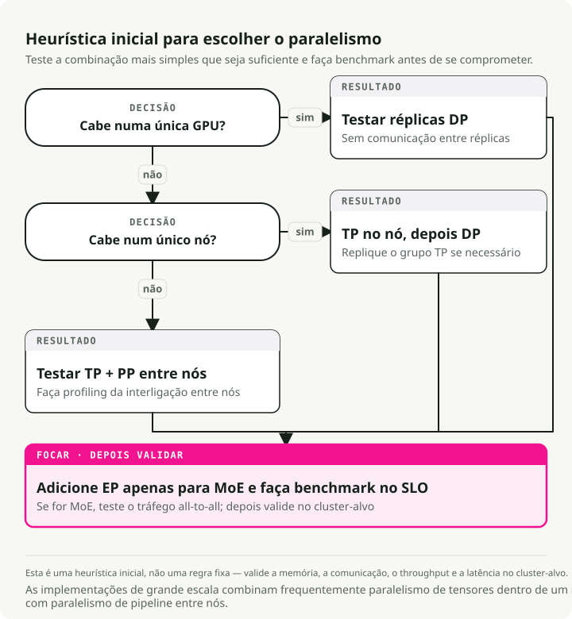
34. Serving Frameworks Comparados
O vLLM é o framework open-source mais adotado, construído sobre PagedAttention e continuous batching. Tem o suporte de modelos mais amplo, uma API compatível com OpenAI e suporta TP/PP/DP/EP. É um projeto da PyTorch Foundation com a maior comunidade.
O SGLang iguala ou supera o vLLM em muitos cenários (até 3.1x de throughput em Llama-70B) através de RadixAttention para reutilização de prefixos, um scheduler CPU sem overhead e geração estruturada nativa. Foi o primeiro framework open-source a igualar o throughput oficial de inferência da DeepSeek à escala em 96 H100s.
O TensorRT-LLM tem a melhor latência por pedido único (35–50 ms de TTFT) graças a CUDA graph fusion e otimização de kernels, com suporte nativo a FP8/FP4. O tradeoff é uma curva de aprendizagem mais inclinada, dependência de Docker e lock-in na NVIDIA.
O TGI (HuggingFace) integra-se bem com o ecossistema HuggingFace e suporta múltiplos backends (NVIDIA, AMD, Intel). No início de 2025, a HuggingFace colocou o TGI em modo de manutenção.
O Ollama é para developers que querem acesso local a LLMs em dois comandos. Não está otimizado para throughput de produção.
O llama.cpp é a opção portátil em C/C++ com o suporte de hardware mais abrangente (ARM, AVX, Metal, CUDA, ROCm, Vulkan). O formato GGUF suporta quantização de 1.5 bits até 8 bits. A inferência em CPU entrega 3–45 tokens/s; em GPU (RTX 4090) atinge ~128 tokens/s em Llama 8B Q4_K_M.
35. Seleção de GPU para Inferência
Preços e disponibilidade de GPUs em março de 2026:
| GPU | Memória | Largura de Banda | Precisão Nativa | TF32 TFLOPS | NVLink | Cloud $/h |
|---|---|---|---|---|---|---|
| B200 | 192 GB HBM3e | 8 TB/s | FP4, FP8, INT8 | ~4,500 (FP8) | 5.0 (1.8 TB/s) | ~$6.25 |
| H200 | 141 GB HBM3e | 4.8 TB/s | FP8, INT8 | 989 | 4.0 (900 GB/s) | $2.15-6.00 |
| H100 SXM | 80 GB HBM3 | 3.35 TB/s | FP8, INT8 | 989 | 4.0 (900 GB/s) | $1.49-3.90 |
| A100 SXM | 80 GB HBM2e | 2.0 TB/s | INT8, FP16 | 312 | 3.0 (600 GB/s) | $1.10-2.54 |
| L40S | 48 GB GDDR6 | 864 GB/s | FP8, INT8 | 362 (FP16) | None | $0.80-1.50 |
| A10G | 24 GB GDDR6 | 600 GB/s | INT8, FP16 | 70 | None | $1.00-1.50 |
| RTX 4090 | 24 GB GDDR6X | 1.0 TB/s | FP8, INT8 | 83 (FP32) | None | ~$0.35/hr |
A H200 é o sweet spot atual para modelos grandes. Os seus 141 GB de memória permitem correr Llama 70B numa única GPU (algo que antes exigia 2x H100), e os 4.8 TB/s de largura de banda dão até 2x mais rapidez do que a H100 em Llama 2 70B. A B200 é um salto geracional: suporte nativo a FP4, 192 GB HBM3e e NVLink 5.0 a 1.8 TB/s. A A10G é muito usada em cloud (como AWS G5) para serving de modelos de 7B–8B parâmetros devido à sua relação custo/desempenho. A RTX 4090 continua a ser a rainha do consumo com MSRP de ~$1.600.
O suporte nativo de quantização em hardware tem grande influência no desempenho. AWQ e GPTQ (com pesos INT4) podem correr eficientemente em qualquer arquitetura desquantizando para registos FP16, mas a verdadeira aceleração nativa via Tensor Cores depende da geração. Hopper (H100/H200) e Ada (L40S/4090) aceleram FP8 nativamente, e Blackwell (B200) acrescenta Tensor Cores FP4 nativos para grandes ganhos de throughput. Todas as GPUs listadas suportam operações matriciais INT8.
O decode de LLM é memory-bandwidth-bound, por isso a largura de banda importa mais do que TFLOPS brutos na maioria das cargas de serving. É por isso que a H200 supera a H100 apesar de a arquitetura de computação ser idêntica.
36. Model Cascading e Routing
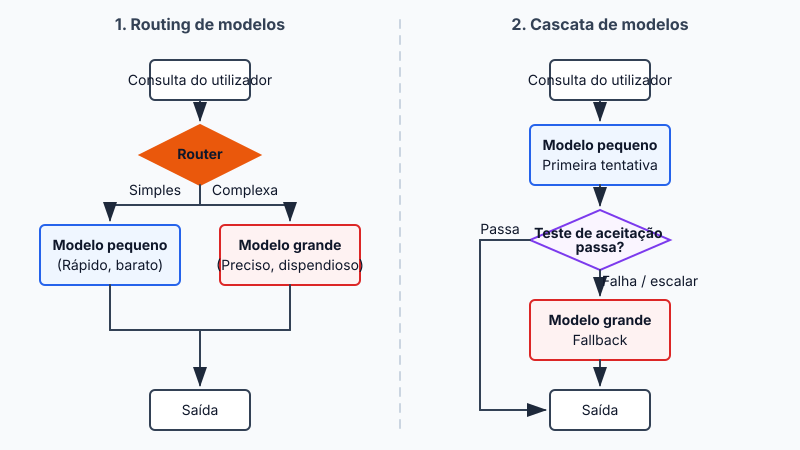
O model routing escolhe qual o LLM que trata cada query com base na complexidade prevista. O RouteLLM (LMSYS/UC Berkeley, ICLR 2025) usa routers de matrix factorization treinados com dados de preferência do Chatbot Arena para obter 85% de redução de custo em MT-Bench mantendo 95% da qualidade do GPT-4. A economia continua a compensar: um modelo frontier como GPT-4o custa ~\\(5.00/M tokens (blended) versus um modelo open rápido como [Llama 3 8B](https://deepinfra.com/pricing/) a ~\\\)0.05/M, uma diferença de cerca de 100x que faz com que mesmo um routing imperfeito valha a pena.
As arquiteturas de router variam entre classificadores BERT leves (~1–5 ms de overhead) e judges baseados em LLM. Cascading é a variante sequencial: uma query passa por uma cadeia de modelos, começando no mais rápido e mais barato. Se uma função de scoring decidir que a geração não é suficientemente boa, a query sobe para o modelo seguinte, mais caro. O FrugalGPT mostrou que este tipo de fallback sequencial pode reduzir os custos de inferência até 98% mantendo o desempenho do melhor LLM individual, ou aumentar a precisão até 4% ao mesmo custo. A ideia é que os modelos frontier caros só sejam usados para a cauda difícil de queries que realmente precisam deles.
Parte VII — Aplicações
Padrões ao nível da aplicação que transformam capacidades brutas do modelo em sistemas úteis. Os embeddings alimentam a recuperação, o RAG ancora respostas em conhecimento externo, os agentes orquestram workflows multi-etapa e o prompt engineering liga tudo.
37. Embedding Models vs Modelos Generativos
Os embedding models codificam texto em vetores de dimensão fixa que capturam significado semântico. Ao contrário dos modelos decoder generativos que produzem sequências de tokens, devolvem um único vetor denso (768–4.096 dimensões) para toda a entrada. A maioria dos embedding models usa transformers encoder-only (attention bidirecional) em vez de decoders. O encoder processa todos os tokens de entrada de uma vez e produz uma representação contextualizada para cada token. Uma pooling layer colapsa depois essas representações por token num único vetor, tipicamente mean pooling (média de todos os embeddings de tokens) ou CLS pooling (usando a saída de um token especial de classificação). O modelo é depois afinado com contrastive learning: textos semanticamente semelhantes são aproximados no espaço vetorial e textos dissemelhantes são afastados.
Principais embedding models (2025-2026):
| Modelo | Dimensões | Arquitetura | Score MTEB |
|---|---|---|---|
| Qwen3-Embedding-8B | até 4,096 | Baseado em decoder (Qwen3) | 70.6% |
| Gemini Embedding 2 | 3,072 | Multimodal (texto/imagem/vídeo/áudio) | 68.2% |
| pplx-embed-v1-4B | 2,560 | Baseado em decoder (Qwen3), INT8/binário nativo | 69.7% |
| Voyage-3-large | 2,048 | Proprietário | 66.8% |
| OpenAI text-embedding-3-large | 3,072 | Proprietário | 64.6% |
Algumas tendências na geração 2025–2026. Os melhores modelos usam agora backbones decoder-only (Qwen3, Mistral) com attention bidirecional e pooling layers por cima, o que quebra a antiga suposição encoder-only. O pplx-embed da Perplexity introduziu embeddings quantizados nativos: INT8 (redução de 4x em armazenamento) e binário (redução de 32x) produzidos diretamente durante a inferência, sem perda de quantização pós-hoc. O Gemini Embedding 2 da Google é o primeiro modelo de embeddings nativamente multimodal, mapeando texto, imagens, vídeo e áudio para um espaço vetorial unificado.
A Matryoshka Representation Learning (MRL, Kusupati et al., NeurIPS 2022) é a técnica que torna as dimensões de embedding flexíveis. O nome vem das bonecas russas. A MRL estrutura um embedding de modo a que as suas primeiras \(m\) dimensões sejam tão informativas como um modelo treinado independentemente com \(m\) dimensões. Durante o treino, em vez de calcular uma única loss sobre o embedding completo, a MRL calcula múltiplas losses em paralelo em dimensões espaçadas logaritmicamente (64, 128, 256, 512, 1024, 2048, 3072). Todas as losses são agregadas e propagadas em conjunto, forçando o modelo a concentrar a informação semântica mais importante nas dimensões iniciais, com cada grupo subsequente de dimensões a acrescentar detalhe mais fino. Grosso para fino, como bonecas encaixadas.
Depois do treino, pode truncar o embedding para qualquer uma destas dimensões treinadas tomando um prefixo do vetor. O impacto prático é grande: o text-embedding-3-large da OpenAI truncado para apenas 256 dimensões supera o antigo text-embedding-ada-002 nas suas 1.536 dimensões completas em MTEB. Uma redução de 6x no tamanho do vetor com melhor qualidade, o que se traduz em 6x menos armazenamento, 6x mais rapidez em similarity search e 6x menos custos de base de dados vetorial sem voltar a treinar o modelo.
O embedding model é a escolha de componente mais importante numa pipeline RAG. Determina a qualidade da recuperação, que estabelece o teto da qualidade de geração. Um embedding model fraco não pode ser compensado por um LLM melhor.
38. Arquitetura RAG em Produção
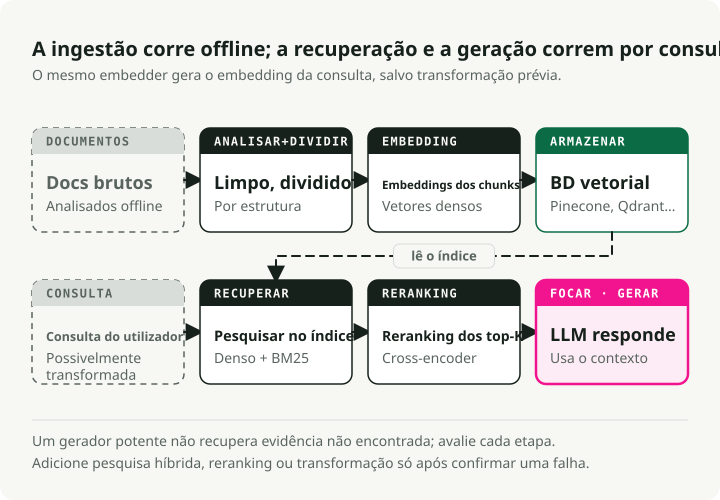
A Retrieval-Augmented Generation ancora as respostas dos LLMs em conhecimento externo recuperando documentos relevantes no momento da query e injetando-os no contexto do prompt. Resolve a limitação central dos modelos puramente paramétricos: o seu conhecimento fica congelado no momento do treino, e alucinam quando lhes é pedida informação que não está nos seus pesos. Um sistema RAG em produção é uma pipeline multi-etapa, e cada etapa mexe no resultado final da resposta.
A pipeline de ingestão corre offline. Os documentos brutos (PDFs, HTML, Markdown, bases de dados) são primeiro convertidos em texto limpo, o que é mais difícil do que parece: só o parsing de PDF já pode perder tabelas, cabeçalhos e formatação. O texto é depois dividido em chunks, que são embebidos e indexados independentemente.
A estratégia de chunking tem um efeito desproporcionado na qualidade da recuperação. Demasiado pequenos (menos de ~100 tokens) e os chunks perdem contexto; demasiado grandes (mais de ~512 tokens) e diluem a relevância com conteúdo fora do tema. As abordagens comuns são tamanho fixo com overlap (256 tokens com 10–15% de overlap — simples e eficaz), recursive character splitting (divide por parágrafo, depois frase, depois palavra — respeita fronteiras naturais) e semantic chunking (agrupa frases por similaridade de embedding — maior qualidade mas mais lento).
Cada chunk é depois convertido em embedding com um modelo como os da Secção 37 e armazenado numa base de dados vetorial (Pinecone, Weaviate, Qdrant, pgvector, etc.).
A pipeline de retrieval corre no momento da query. O RAG ingênuo (fazer embedding da query, uma única pesquisa vetorial, e colocar os resultados no prompt) normalmente não atinge a precisão desejada em ambientes empresariais. O RAG de nível de produção adiciona mais etapas para fechar essa lacuna:
- Hybrid search combina recuperação vetorial densa (similaridade semântica) com recuperação esparsa como BM25 (matching exato de palavras-chave), fundidas via Reciprocal Rank Fusion (RRF). A pesquisa densa é boa para paráfrases semânticas ("cost of living" corresponde a "expenses"), e a pesquisa esparsa apanha termos exatos que os embeddings falham (IDs de produto, códigos de erro, acrónimos). A hybrid search dá uma melhoria de 15–30% na precisão face a pesquisa vetorial pura (Redis/Azure Benchmarks, 2024).
- Reranking passa os top-\(k\) chunks recuperados (tipicamente 20–50) por um modelo cross-encoder que avalia a relevância query-documento com mais precisão do que a similaridade cosseno bi-encoder da recuperação inicial. O cross-encoder vê a query completa e o documento completo em conjunto, permitindo matching semântico fino. O reranking acrescenta mais 23.4% de melhoria face à hybrid search sozinha (Redis/Azure Benchmarks, 2024), ao custo de 50–200 ms de latência adicional. Os top-\(n\) resultados rerankeados (3–10) são depois injetados no prompt do LLM. Cobri a pipeline completa de pesquisa multi-etapa (BM25, reranking com cross-encoder, relevância com LLM) em Building a Modern Search Ranking Stack.
- Query transformation reescreve a query do utilizador antes da retrieval para melhorar o recall. HyDE (Hypothetical Document Embeddings) faz o LLM gerar uma resposta hipotética, que é depois embebida e usada para retrieval. Multi-query expansion gera várias formulações da mesma pergunta. Step-back prompting coloca primeiro uma questão mais geral para ir buscar contexto mais amplo.
Os failure modes mais comuns:
- Falha de retrieval — o documento correto existe mas não é recuperado. Corrige-se com chunking melhor, hybrid search ou filtering por metadata.
- Context poisoning — chunks recuperados irrelevantes induzem o LLM em erro. Corrige-se com reranking e cortes top-\(k\) mais apertados.
- Lost-in-the-middle — o LLM ignora contexto relevante colocado no meio de um prompt longo (Liu et al., 2024 mostraram que os modelos prestam mais atenção ao início e ao fim da janela de contexto).
O GraphRAG (Microsoft, 2024) complementa a pesquisa vetorial com travessia de knowledge graph. Durante a indexação, um LLM extrai entidades e relações dos documentos e constrói um grafo que captura ligações multi-hop invisíveis à pesquisa vetorial plana. No momento da query, o GraphRAG percorre esse grafo para consultas centradas em relações como "que fornecedores estão ligados a ambas as empresas?", onde o RAG standard falha. O custo é computação e armazenamento de indexação muito mais elevados.
Decomposição típica da latência end-to-end: embedding 5–20 ms, pesquisa vetorial 10–100 ms, reranking 50–200 ms, geração com LLM 200–2.000 ms (Milvus RAG Optimization Guide, AIMultiple Reranker Benchmarks, 2026). As etapas de retrieval acrescentam apenas ~100–300 ms de overhead, o que é modesto face à geração, mas o seu impacto na qualidade da resposta é grande: é a diferença entre uma resposta alucinada e uma resposta ancorada.
39. Arquiteturas de Agentes e Tool Calling
Os agentes LLM usam modelos como motores de raciocínio que planeiam, invocam ferramentas, observam resultados e iteram. A escolha da arquitetura (como o agente raciocina e quando age) determina custo, latência e fiabilidade. Três padrões de raciocínio cobrem a maior parte dos sistemas de produção:
- ReAct — ciclos Thought → Action → Observation. Adapta-se em tempo real à medida que cada observação atualiza o raciocínio, mas o histórico acumula e tem de ser reprocessado a cada passo, o que o torna o padrão mais caro.
- ReWOO — planeia todas as chamadas a ferramentas à partida numa única passagem LLM usando placeholders (
#E1,#E2), executa-as (potencialmente em paralelo) e sintetiza. Até 5x de poupança em tokens face a ReAct, mas é "cego" durante a execução: não consegue recuperar se uma ferramenta falhar cedo. - Plan-and-Execute — um planner gera um plano multi-etapa; um executor corre cada passo com capacidade de replanear em caso de falha. Permite especialização de modelos (modelo forte planeia, modelo barato executa). Tem as melhores taxas de sucesso em tarefas complexas.
| Padrão | Custo em Tokens | Adaptabilidade | Melhor Para |
|---|---|---|---|
| ReAct | Alto | Excelente — muda em tempo real | Tarefas exploratórias, debugging, chat |
| ReWOO | Baixo (~5x poupança) | Fraca — cego durante execução | Pipelines previsíveis, dashboards |
| Plan-and-Execute | Médio | Boa — replana em caso de falha | Análise complexa, tarefas de pesquisa |
Function calling é o mecanismo que os agentes usam para invocar ferramentas. O function calling nativo (suportado por GPT-4o, Claude, Gemini, Llama 3.1+) produz invocações de ferramentas em JSON estruturado validadas contra um schema fornecido, com taxas de erro muito mais baixas do que parsing baseado em texto. O modelo vê as definições das ferramentas como parte do seu contexto e aprende a emitir chamadas bem formadas. O parallel function calling (múltiplas ferramentas numa única resposta) reduz round trips em operações independentes.
Structured output e constrained decoding garantem conformidade com o schema modificando a própria geração de tokens. Motores como xgrammar (usado em vLLM e SGLang) aplicam grammar masks em cada passo de decoding e produzem JSON 100% válido com overhead quase nulo. O Schema-Guided Reasoning (SGR) vai mais longe: como os LLMs geram campos sequencialmente, colocar campos de análise antes dos campos de decisão no schema força o modelo a raciocinar antes de decidir. Três padrões SGR cobrem a maioria dos casos de uso em produção: Cascade (passos sequenciais), Routing (tipos Union como interruptores semânticos) e Cycle (listas limitadas).
Armadilhas de produção: a seleção de ferramentas degrada-se para lá de ~15–20 ferramentas disponíveis, agentes multi-etapa demoram 5–30+ segundos, e workflows complexos custam 10–50x mais tokens do que soluções de prompt único. A tendência de 2024–2025 é para abordagens híbridas: raciocínio ReAct com function calling nativo, orquestrado por frameworks como LangGraph.
40. Prompt Engineering para Produção
O prompt engineering em produção tem menos a ver com truques engenhosos e mais com fiabilidade sistemática. As técnicas abaixo estão ordenadas por impacto. As duas primeiras, por si só, resolvem a maioria dos problemas em produção.
Exemplos few-shot são a forma mais fiável de controlar o formato de saída. 3–5 exemplos diversos que cubram edge cases (inputs vazios, queries ambíguas, respostas multipartes) melhoram dramaticamente a conformidade de formato e reduzem a necessidade de pós-processamento. O que importa é a diversidade: os exemplos devem cobrir a distribuição dos inputs reais, não apenas o happy path. Os rendimentos decrescentes aparecem depois de 5 exemplos, e cada exemplo consome tokens de contexto, por isso a qualidade bate a quantidade.
O prompting chain-of-thought (CoT) pede ao modelo para raciocinar passo a passo antes de responder. Até o simples sufixo "Let's think step by step" aumenta significativamente a precisão em matemática, lógica e raciocínio multi-etapa (Kojima et al., 2022). Para produção, few-shot CoT (exemplos que incluem os passos de raciocínio, não apenas a resposta final) é mais fiável do que zero-shot. A self-consistency (Wang et al., 2023) gera vários caminhos CoT (temperature 0.5–0.7) e toma o voto maioritário, o que reduz erros aleatórios à custa de chamadas de inferência adicionais.
O structured output com schemas JSON explícitos (Secção 39) remove uma classe inteira de falhas de parsing. Combinado com motores de constrained decoding como xgrammar, obtém-se output 100% válido com overhead quase nulo. Sem parsing com regex, sem ciclos de retry.
O prompt chaining divide tarefas complexas numa pipeline de passos focados: classificar intenção → recuperar contexto → gerar resposta → validar output. Cada passo é um prompt simples e testável com um único objetivo. Isto supera de forma consistente os "mega-prompts" que tentam tratar de tudo numa única chamada, porque cada etapa pode usar um modelo diferente (classificador barato, gerador caro), as falhas ficam localizadas e depuráveis, e outputs intermédios podem ser colocados em cache e reutilizados. O tradeoff é latência adicional devido a chamadas LLM sequenciais, por isso use chaining em fluxos críticos para a qualidade.
A temperature controla a aleatoriedade no token sampling. Use 0.0–0.2 para tarefas determinísticas (classificação, extração, geração de código) onde a consistência importa. Use 0.7–1.0 para tarefas criativas (escrita, brainstorming) onde quer diversidade. Evite temperatures acima de 1.0 em produção; os outputs tornam-se incoerentes. A temperature também interage com top_p e top_k de formas não óbvias; na maioria dos sistemas em produção, definir a temperature e deixar top_p em 1.0 é suficiente.
A separação entre system e user message importa mais do que a maioria das equipas percebe. As system messages definem comportamento persistente ("You are a medical coding assistant. Always cite ICD-10 codes."), e as user messages transportam o conteúdo por pedido. Os modelos atendem às system messages de forma diferente: definem o enquadramento comportamental em vez de contribuírem para o conteúdo da conversa. Coloque restrições rígidas ("NEVER include patient names in output") na system message, porque os modelos são mais consistentes a evitar padrões específicos do que a seguir instruções positivas genéricas.
A grande mudança em 2024–2025 foi de "prompt engineering" para context engineering: o foco passou de construir instruções inteligentes para montar dinamicamente a informação certa (documentos recuperados, resultados de ferramentas, histórico de conversa, exemplos few-shot) no formato certo e na posição certa da janela de contexto. Os modelos prestam mais atenção ao início e ao fim do contexto, por isso colocar instruções críticas e o conteúdo recuperado mais relevante nessas posições produz melhorias mensuráveis de qualidade. Cobri esta mudança em Context Engineering for AI Agents.
Parte VIII — Operações em Produção
As preocupações operacionais que decidem se o sistema sobrevive ao contacto com tráfego real: rate limiting, failure modes, monitorização, otimização de custos e planeamento de capacidade.
41. Rate Limiting para Pedidos de Custo Variável
O rate limiting tradicional por pedidos por segundo assume custo aproximadamente igual por pedido. Os LLMs quebram essa suposição. Um prompt de classificação com 10 tokens e uma análise documental com 100K tokens batem no mesmo endpoint API mas diferem em custo por quatro ordens de magnitude. Fazer rate limiting por RPS ou deixa passar pedidos caros sem controlo ou estrangula pedidos baratos desnecessariamente.
Os sistemas de produção precisam de rate limiting baseado em tokens em múltiplas dimensões. A OpenAI impõe RPM (requests per minute) e TPM (tokens per minute) com limites por tiers: o GPT-5 Tier 1 começa em 500K TPM, escalando até 4M TPM no Tier 4. A Anthropic é mais granular, com limites separados de ITPM (input tokens per minute) e OTPM (output tokens per minute), refletindo o facto de que os tokens de saída custam 3–5x mais a gerar do que os tokens de entrada a processar. Ambos usam o algoritmo token bucket, repondo capacidade continuamente em vez de a reiniciar em intervalos fixos.
O padrão prático de implementação é uma hierarquia de limites multidimensionais (utilizador → aplicação → organização → global), com tiers de prioridade para acesso premium. Ao nível do pedido, a técnica importante é reserva de orçamento de tokens: estimar os tokens totais (input + max_tokens) no momento de admissão, deduzir do bucket, depois ajustar quando o pedido termina com o consumo real. Isso evita que uma rajada de pedidos com gerações longas esgote a capacidade antes mesmo de começar a produzir output.
Para deployments self-hosted, o equivalente é throughput aprovisionado: reservar capacidade GPU dedicada para taxas de tokens garantidas. Anthropic e Amazon Bedrock oferecem isto como produto; em deployments vLLM, significa configurar admission control com base em slots de decode ativos e pressão no KV cache, e não em simples contagens de pedidos. O ponto remete para a Secção 5: o throughput mede-se em tokens, não em pedidos, por isso o rate limiting também tem de ser.
42. Failure Modes Contra os Quais Deve Projetar
O serving de LLM falha de formas que os serviços web tradicionais não falham. Conhecer estes failure modes (e desenhar defesas antes de chegarem à produção) é o que separa sistemas fiáveis de demos impressionantes.
Out-of-Memory (OOM) é a falha mais comum. Um modelo 70B em FP16 precisa de ~140 GB só para os pesos, e o KV cache para uma única sequência com contexto 128K acrescenta ~40 GB (Secção 6). A diferença entre "cabe em memória" e "OOM sob carga" é menor do que parece: um batch de 8 pedidos com contexto longo pode consumir mais memória em KV cache do que os pesos do modelo. A prevenção começa pelo parâmetro gpu_memory_utilization do vLLM (default 0.9; deployments conservadores usam 0.85–0.90), combinado com quantização e PagedAttention. Para cargas com muita pressão de KV cache, o LMCache faz offload do KV cache para memória CPU ou disco e obtém redução de latência de 3–10x ao expandir a capacidade efetiva de cache para além dos limites da memória GPU.
Preemption acontece quando o espaço do KV cache se esgota e o scheduler tem de expulsar pedidos ativos para abrir espaço a novos. No vLLM, os pedidos preempted são recomputados de raiz em vez de serem trocados para CPU (a recomputação é mais rápida para a maioria dos comprimentos de sequência práticos). Do lado do utilizador, isto significa que o pedido em voo reinicia silenciosamente: o TTFT parece normal, mas a latência end-to-end duplica ou triplica. Vigie de perto as contagens de preemption. Taxas de preemption em subida significam que precisa de mais memória, sequências mais curtas ou mais réplicas.
Tail latency dispara quando prefills grandes monopolizam a GPU. Um único prefill de 100K tokens pode bloquear passos de decode para todos os outros pedidos no batch. O chunked prefill (Secção 7) é a principal defesa, com uma redução de 54% no P99 TBT. A estratégia de scheduling também importa: o scheduler Learning-to-Rank (NeurIPS 2024) prevê comprimentos relativos de output e aproxima uma ordenação shortest-job-first, obtendo uma redução de 6.9x na latência média face a FCFS com menos de 2% de overhead. Sistemas de scheduling sensíveis ao comprimento como CascadeInfer vão mais longe ao particionar instâncias em grupos especializados por comprimento, reduzindo o TTFT de cauda em 56–62%.
Falhas em cascata seguem um padrão previsível. Um pedido lento (prefill grande ou geração longa) ocupa um decode slot, a profundidade da fila cresce, clientes a montante batem em timeouts, os retries amplificam a carga em 2–3x, e todo o sistema degrada-se. A hierarquia de prevenção: admission control (rejeitar pedidos quando a profundidade da fila excede um limiar) → limites de concorrência por pedido e caps max_tokens → circuit breakers no gateway → pools de prefill/decode desagregados (Secção 7) para que pedidos intensivos em prefill não consigam bloquear os decoders.
43. Monitorizar Sistemas LLM
A monitorização de LLMs é diferente da monitorização de APIs tradicionais em aspetos fundamentais. Cada pedido tem custo variável, duas fases distintas com bottlenecks diferentes e uma pegada de memória que depende tanto do comprimento da entrada como do comprimento da geração. Métricas standard como latência de pedido e taxa de erro falham a maior parte do que importa.
A métrica que a maioria das equipas não está a acompanhar é o goodput: o número de pedidos por segundo que cumprem todos os limiares de SLO (TTFT, TPOT, latência total). O conceito vem da medição de produtividade de ML do Google Cloud e tornou-se a melhor medida única da saúde do sistema. O throughput bruto pode parecer ótimo enquanto o goodput colapsa: um sistema a processar 100 pedidos/segundo mas a violar os SLOs de TTFT em 40% deles tem goodput de 60, e 40% dos utilizadores estão a ter uma má experiência. Otimizar para goodput obriga a preocupar-se com a distribuição do desempenho, não apenas com a média.
O vLLM expõe um endpoint Prometheus em /metrics com métricas que cobrem o ciclo de vida do serving: vllm:num_requests_running e vllm:num_requests_waiting (pressão na fila), vllm:kv_cache_usage_perc (fração de blocos de KV cache em uso — acima de 90% antecipa preemption iminente), histogramas de comprimento de geração e taxas de hit de prefix cache. O setup prático é simples: o Prometheus faz scrape de /metrics (a cada 1–5 segundos), o Grafana visualiza dashboards, e o OpenTelemetry com Jaeger trata do tracing distribuído em pipelines LLM multi-serviço.
Os alertas que importam, e a razão de cada limiar:
- Picos na contagem de preemptions — pedidos estão a ser expulsos e reiniciados; os utilizadores experienciam duplicação silenciosa da latência.
- Utilização de KV cache >90% — está a um batch de pedidos de contexto longo de uma cascata de preemptions.
- Profundidade da fila a exceder 2–3x o batch size — o admission control deve começar a rejeitar ou deprioritizar.
- TTFT a subir enquanto TPOT se mantém plano — este padrão de divergência significa que o problema está na fila ou na rede, não na computação GPU. As fases de prefill e decode têm bottlenecks independentes (Secção 4), por isso quando apenas uma métrica se move sabe imediatamente em que subsistema deve olhar. Só este diagnóstico poupa horas de debugging.
44. Otimização de Custos: Uma Estratégia Composta
Os preços atuais de API (março de 2026) variam por três ordens de magnitude: GPT-4o a \(2.50/\)10.00 por milhão de tokens de entrada/saída versus Gemini Flash-Lite a \(0.075/\)0.30. A trajetória é marcante. O desempenho equivalente ao GPT-4 custa hoje $0.40/M tokens versus $20 no final de 2022, com custos a cair cerca de 10x por ano. Mesmo nesta curva deflacionária, a diferença entre deployment ingênuo e otimizado é de 10–20x em qualquer ponto de preço.
Note a assimetria no pricing de todos os fornecedores: os tokens de saída custam 3–10x mais do que os tokens de entrada. O GPT-4o cobra $10/M output versus $2.50/M input (4x). O Claude Sonnet 4 cobra $15/M output versus $3/M input (5x). Isto acontece porque os tokens de saída requerem passos sequenciais de decode (Secção 7) enquanto os tokens de entrada são processados em paralelo. Por isso, otimizar o comprimento da saída (structured outputs, geração restrita, system prompts concisos) dá mais alavancagem do que otimizar o comprimento da entrada.
A estratégia vencedora combina várias abordagens, e os efeitos multiplicam-se:
- Quantização (FP16 → INT4) corta 75% da memória de serving, o que permite batches maiores e 60–70% de redução de custo operacional (Secção 9).
- Model routing envia 70% do tráfego para modelos mais baratos. Um caso real: fatura mensal de $42K para $29K (Maxim AI Case Study, 2024) ao alinhar a complexidade do pedido com a capacidade do modelo (Secção 36).
- Prompt caching poupa até 90% em cargas com prefixos partilhados. A Anthropic cobra 0.1x do preço base por leituras de cache, e os tokens em cache nem contam para os limites de rate ITPM (Secção 16).
- Batch APIs oferecem descontos de 50% para trabalho não em tempo real (avaliações, geração de dados sintéticos, classificação em massa).
- Self-hosting atinge break-even em aproximadamente >2M tokens/dia, mas a análise de break-even é traiçoeira. Um orçamento GPU de $5K/mês passa facilmente para $25K quando se somam tempo de engenharia, overhead de infraestrutura, burden de on-call e utilização subótima face a fornecedores que amortizam por milhares de clientes.
Empilhe estas otimizações de forma conservadora: quantização (0.3x) × routing (0.7x) × caching (0.5x) × batching (0.5x) = ~0.05x, uma redução de 95% face ao baseline ingênuo. Nem todas as cargas se qualificam para todas as otimizações, mas mesmo empilhamento parcial dá poupanças de 5–10x.
O custo escondido que mina a matemática do self-hosting: a engenharia de ML representa 70–80% do custo total de deployment, não a computação (TrueFoundry / MLOps Reports, 2024). A fatura das GPUs é apenas a parte visível do iceberg.
45. Planeamento de Capacidade e Autoscaling
O planeamento de capacidade para serving LLM é diferente dos serviços web tradicionais em três aspetos. Os custos dos pedidos variam por ordens de magnitude (um pedido de 100 tokens e um de 100K tokens atingem o mesmo endpoint). O decode é um processo sequencial de longa duração, não um ciclo rápido pedido-resposta. E a restrição dominante é a memória, não a computação. Falhe em qualquer um destes pontos e ou paga por GPUs ociosas ou perde pedidos sob carga.
O teto rígido para pedidos concorrentes é o orçamento de memória do KV cache, não os FLOPS:
Para um modelo Llama 3 70B em INT4 (~35 GB) numa H100 de 80 GB, restam aproximadamente 40 GB para KV cache. Com GQA e contexto médio de 4K, cada sequência precisa de ~160 MB de KV cache, o que dá ~250 sequências concorrentes. Com contexto 128K, isso desce para ~5 sequências por GPU. É por isso que a seleção de GPU e a otimização do KV cache influenciam diretamente o seu plano de capacidade.
A fórmula de capacidade para dimensionamento da frota:
O detalhe importante é "at target SLO". Uma única H100 pode ultrapassar 2.000+ tokens/segundo se não se importar com latência, mas apenas 400–800 tokens/segundo mantendo P99 TTFT abaixo de 500 ms. Faça sempre benchmark com os seus objetivos reais de SLO, não com máximos teóricos.
Os sinais de autoscaling precisam de ser repensados. A utilização GPU é quase inútil como sinal de scaling porque se mantém alta mesmo quando o sistema está sobrecarregado: a GPU está sempre ocupada, quer esteja a processar pedidos de forma saudável quer esteja a debater-se com preemptions. Sinais melhores são queue depth (mede diretamente procura acima da capacidade), utilização do KV cache (antecipa preemption antes de acontecer — escale aos 80%, não aos 95%) e degradação do goodput (as violações de SLO são a verdade de terreno de que a capacidade é insuficiente). Estas são as métricas da Secção 43.
Para ambientes de desenvolvimento e staging, scale-to-zero é a economia correta. Instâncias GPU custam $2–4/hora; um ambiente de staging 24/7 custa $1.500–3.000/mês para uma única GPU. Plataformas serverless de inferência e autoscalers baseados em Kubernetes (como KEDA com métricas customizadas) podem reduzir as instâncias a zero durante períodos inativos e fazer cold-start em 30–60 segundos, o que é aceitável para uso não produtivo. O tradeoff é o tempo de carregamento do modelo (30–60 segundos para um modelo 70B), o que torna scale-to-zero impraticável para objetivos de latência em produção mas reduz o gasto não produtivo com GPUs em 80–90%.
O Sistema Interligado
Estes 45 conceitos não são uma coleção solta. Formam um sistema ligado. O tamanho do KV cache determina o batch size, o batch size determina a intensidade aritmética, a intensidade aritmética controla se o decode é memory-bound, isso conduz o TPOT, e o TPOT define o throughput. O GQA reduz o KV cache, o que permite batches maiores, o que aumenta a intensidade aritmética, o que melhora a utilização GPU. O FlashAttention explora a diferença de largura de banda entre SRAM e HBM. O continuous batching resolve a utilização da computação mas cria fragmentação de memória, que é o que o PagedAttention resolve. O chunked prefill co-escalona trabalho compute-bound e memory-bound; o modelo roofline explica porque esta complementaridade funciona.
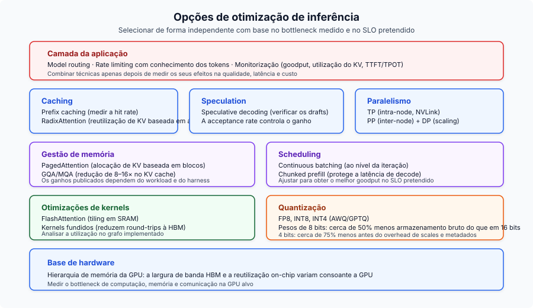
Do lado do treino, a armadilha Chinchilla empurrou o campo de "treinar grande" para "treinar pequeno e durante mais tempo" (Llama 3 8B com 1.875 tokens por parâmetro). O GRPO removeu o custo em memória de quatro modelos do PPO, o que tornou viável o raciocínio do DeepSeek-R1. A distillation a partir do chain-of-thought do R1 revelou-se mais eficaz do que aplicar RL diretamente a modelos menores, e isso reformulou a forma como se constroem sistemas compactos de raciocínio.
O meta-padrão: os custos de inferência estão a cair cerca de 10x por ano enquanto as capacidades sobem. Equipas que tratam a otimização de inferência como uma disciplina real de engenharia (routing, caching, quantização, hardware dimensionado corretamente) acumulam vantagens num mercado onde o piso de custo continua a cair.
Princípios-Chave
- A inferência de LLM tem duas fases distintas. Prefill é compute-bound, decode é memory-bandwidth-bound. Cada otimização atinge uma ou ambas.
- O KV cache é o bottleneck central. O seu tamanho determina a capacidade de batching, a pressão de memória e, em última análise, o throughput. GQA, PagedAttention e quantização atacam-no todos.
- A hierarquia de memória da GPU conduz tudo. A diferença de 10x em largura de banda entre SRAM e HBM explica FlashAttention, kernel fusion e porque o decode é memory-bound.
- Continuous batching + PagedAttention em conjunto dão 23x de throughput face a serving ingênuo. Não negociável em produção.
- Ótimo segundo Chinchilla não é ótimo para inferência. O campo passou para sobre-treino massivo de modelos menores (1.875 tokens/parâmetro para Llama 3 8B).
- GRPO e distillation remodelaram o alinhamento. O DeepSeek-R1 mostrou que GRPO + recompensas verificáveis + distillation supera aplicar RL diretamente a modelos menores.
- A otimização de custos multiplica-se. Empilhar quantização, routing, caching e batch APIs dá uma redução de custo de 5–10x face a deployment ingênuo.
- A largura de banda importa mais do que TFLOPS no serving. A H200 supera a H100 com computação idêntica, puramente devido à largura de banda de memória.
Leitura Adicional
Análises aprofundadas relacionadas deste blogue, organizadas por tópico:
- LLM Fine-Tuning Guide — quando fazer fine-tune vs. RAG vs. prompt engineering
- Open-Source LLM Variants and File Formats — alinhar variantes de modelos e formatos quantizados com o hardware
- LoRAX Serving Guide — servir milhares de adapters LoRA em produção
- Scaling Large Language Models — estratégias multi-GPU e multi-nó
- Local LLMs on macOS — setup prático com llama.cpp e Ollama
- AI Agent Reasoning Loops in 2026 — análise aprofundada de ReAct, ReWOO e Plan-and-Execute
- AI Agent Memory Architecture in 2026 — checkpoints, vector stores e memória documental para agentes stateful
Referências
Organizadas por área temática; números de secção entre parênteses retos.
Inferência e Attention
- FlashAttention: Fast and Memory-Efficient Exact Attention with IO-Awareness - Dao et al., NeurIPS 2022
- FlashAttention-2: Faster Attention with Better Parallelism and Work Partitioning - Dao, 2023
- FlashAttention-3: Fast and Accurate Attention with Asynchrony and Low-precision - Shah et al., NeurIPS 2024
- Flash-Decoding for long-context inference - Dao et al., 2023
- Efficient Memory Management for Large Language Model Serving with PagedAttention - Kwon et al., SOSP 2023
- Orca: A Distributed Serving System for Transformer-Based Generative Models - Yu et al., OSDI 2022
- GQA: Training Generalized Multi-Query Attention - Ainslie et al., 2023
- Triton: an intermediate language and compiler for neural network computations - Tillet et al., MAPL 2019
- FlashNorm: Fast Normalization for LLMs - 2024
- Deep Kernel Fusion for Transformers - DeepFusionKernel, 2026
Speculative Decoding
- EAGLE-3: Scaling up Inference Acceleration of Large Language Models - Li et al., NeurIPS 2025
- Medusa: Simple LLM Inference Acceleration Framework with Multiple Decoding Heads - ICML 2024
Quantização
- AWQ: Activation-aware Weight Quantization for LLM Compression and Acceleration - MLSys 2024 Best Paper
- GPTQ: Accurate Post-Training Quantization for Generative Pre-trained Transformers - Frantar et al., ICLR 2023
- Marlin: Mixed-Precision (FP16xINT4) LLM Inference Kernel - Frantar et al., 2024
Treino e Fine-Tuning
- LoRA: Low-Rank Adaptation of Large Language Models - Hu et al., ICLR 2022
- QLoRA: Efficient Finetuning of Quantized LLMs - Dettmers et al., NeurIPS 2023
- ZeRO: Memory Optimizations Toward Training Trillion Parameter Models - Rajbhandari et al., SC20
- ZeRO-Infinity: Breaking the GPU Memory Wall for Extreme Scale Deep Learning - Rajbhandari et al., 2021
- Self-Instruct: Aligning Language Models with Self-Generated Instructions - Wang et al., ACL 2023
- WizardLM: Empowering Large Language Models to Follow Complex Instructions - Xu et al., ICLR 2024
- Phi-4 Technical Report - Microsoft, 2024
- AI models collapse when trained on recursively generated data - Shumailov et al., Nature 2024
Alinhamento
- Direct Preference Optimization: Your Language Model is Secretly a Reward Model - Rafailov et al., NeurIPS 2023
- DeepSeekMath: Pushing the Limits of Mathematical Reasoning in Open Language Models - Introduced GRPO
- DeepSeek-R1: Incentivizing Reasoning Capability in LLMs via Reinforcement Learning - DeepSeek, 2025
Escalabilidade e Arquitetura
- The Llama 3 Herd of Models - Meta, 2024
- LLaMA: Open and Efficient Foundation Language Models - Touvron et al. (Meta), 2023
- Llama 2: Open Foundation and Fine-Tuned Chat Models - Touvron et al. (Meta), 2023
- Qwen3 Technical Report - Qwen Team (Alibaba), 2025
- Training Compute-Optimal Large Language Models - Hoffmann et al. (Chinchilla), NeurIPS 2022
- RoFormer: Enhanced Transformer with Rotary Position Embedding - Su et al., 2021
- YaRN: Efficient Context Window Extension of Large Language Models - Peng et al., ICLR 2024
- SGLang: Efficient Execution of Structured Language Model Programs - Zheng et al., NeurIPS 2024
- Mixtral of Experts - Jiang et al. (Mistral AI), 2024
Embeddings
- Matryoshka Representation Learning - Kusupati et al., NeurIPS 2022
- pplx-embed-v1: Diffusion-Pretrained Dense and Contextual Embeddings - Perplexity AI, 2026
Arquiteturas de Agentes
- ReAct: Synergizing Reasoning and Acting in Language Models - Yao et al., ICLR 2023
- ReWOO: Decoupling Reasoning from Observations for Efficient Augmented Language Models - Xu et al., 2023
- Plan-and-Solve Prompting: Improving Zero-Shot Chain-of-Thought Reasoning by Large Language Models - Wang et al., ACL 2023
Routing
- RouteLLM: Learning to Route LLMs with Preference Data - Ong et al., ICLR 2025
Benchmarks
- MLPerf Inference v5.0 Results - MLCommons, April 2025
Arquiteturas de Serving
- SARATHI: Efficient LLM Inference by Piggybacking Decodes with Chunked Prefills - Agrawal et al., 2023 (Chunked Prefill)
- Splitwise: Efficient Generative LLM Inference Using Phase Splitting - Patel et al., ISCA 2024 (Disaggregated Serving)
- DistServe: Disaggregating Prefill and Decoding for Goodput-optimized Large Language Model Serving - Zhong et al., OSDI 2024 (Disaggregated Serving)
Serving Frameworks
- vLLM - motor de serving baseado em PagedAttention
- SGLang - RadixAttention e geração estruturada
- TensorRT-LLM - inferência otimizada da NVIDIA
- llama.cpp - inferência portátil em C/C++
- DeepSpeed - biblioteca de treino distribuído da Microsoft
- Ollama - runner local de LLM
Operações
- Efficient LLM Scheduling by Learning to Rank - Fu et al., NeurIPS 2024 (vLLM-LTR)
- CascadeInfer: Low-Latency and Load-Balanced LLM Serving via Length-Aware Scheduling - 2024
- Goodput metric as measure of ML productivity - Google Cloud, 2024
- vLLM Optimization and Tuning - Documentação do vLLM
- vLLM Metrics - Documentação do vLLM
- LMCache: KV Cache Management for LLM Serving - offloading de KV cache
- OpenAI Rate Limits - Documentação da API OpenAI
- Anthropic Rate Limits - Documentação da API Anthropic